CBW_2021_CAN_M7 Single Cell RNA
2021-06-08
Chapter 1 Down the rabbit-hole
- Javier Diaz - javier.diazmejia@gmail.com
Script based on: https://satijalab.org/seurat/articles/integration_introduction.html
- GENERAL OVERVIEW OF THIS SCRIPT
- Loads scRNA-seq data from Cell Ranger (MTX files)
- Generates QC plots for each dataset
- Normalizes each dataset
- Saves R objects with each normalized dataset
1.0.1 DEFINE ENVIRONMENT, INPUTS AND OUTDIR
1.0.1.0.0.1 Required libraries
## Attaching SeuratObject1.0.1.0.0.2 User’s home and stopwatch to time run
## [1] "/Users/jdiazmej"1.0.1.0.0.3 Define inputs
### Select glioblastoma datasets from Richards_NatCancer_2021
DatasetIds <- list( ## List of input IDs to process
`1` = "G1003_A_T",
`2` = "G620_T",
`3` = "G910_A_T",
`4` = "G945_I_T",
`5` = "G946_I_T",
`6` = "G967_A_T",
`7` = "G983_A_T"
)
### /path_to/MTX_DIRECTORIES from 10X Cell Ranger (i.e. 'filtered_feature_bc_matrix' directories
### with [features.tsv.gz, barcodes.tsv.gz and matrix.mtx.gz] files)
PathToDatasets <- list(
"G1003_A_T" = "~/CourseData/CAN_data/Module7/MTX_FILES/Richards_NatCancer_2021/G1003_A_T/",
"G620_T" = "~/CourseData/CAN_data/Module7/MTX_FILES/Richards_NatCancer_2021/G620_T/",
"G910_A_T" = "~/CourseData/CAN_data/Module7/MTX_FILES/Richards_NatCancer_2021/G910_A_T/",
"G945_I_T" = "~/CourseData/CAN_data/Module7/MTX_FILES/Richards_NatCancer_2021/G945_I_T/",
"G946_I_T" = "~/CourseData/CAN_data/Module7/MTX_FILES/Richards_NatCancer_2021/G946_I_T/",
"G967_A_T" = "~/CourseData/CAN_data/Module7/MTX_FILES/Richards_NatCancer_2021/G967_A_T/",
"G983_A_T" = "~/CourseData/CAN_data/Module7/MTX_FILES/Richards_NatCancer_2021/G983_A_T/"
)1.0.1.0.0.4 Define outputs
### Outputs
PathForOutfiles <- "~/CourseData/CAN_data/Module7/OUTFILES/Richards_NatCancer_2021" ## /path_to/out_directory
PrefixOutfiles <- "Richards_NatCancer_2021" ## Prefix for outfiles
PathForOutfiles <- gsub("^~/",paste0(UserHomeDirectory,"/"), PathForOutfiles)
dir.create(path = PathForOutfiles, recursive = T, showWarnings = F)1.0.1.0.0.5 Define default parameters
1.0.1.0.0.6 Report R sessionInfo
OutfileRSessionInfo<-paste0(PathForOutfiles, "/", PrefixOutfiles, "_SingleCell_1_QC_Normalization_RSessionInfo.txt")
writeLines(capture.output(sessionInfo()), OutfileRSessionInfo)
capture.output(sessionInfo())## [1] "R version 4.0.2 (2020-06-22)"
## [2] "Platform: x86_64-apple-darwin17.0 (64-bit)"
## [3] "Running under: macOS High Sierra 10.13.6"
## [4] ""
## [5] "Matrix products: default"
## [6] "BLAS: /System/Library/Frameworks/Accelerate.framework/Versions/A/Frameworks/vecLib.framework/Versions/A/libBLAS.dylib"
## [7] "LAPACK: /Library/Frameworks/R.framework/Versions/4.0/Resources/lib/libRlapack.dylib"
## [8] ""
## [9] "locale:"
## [10] "[1] en_CA.UTF-8/en_CA.UTF-8/en_CA.UTF-8/C/en_CA.UTF-8/en_CA.UTF-8"
## [11] ""
## [12] "attached base packages:"
## [13] "[1] stats graphics grDevices utils datasets methods base "
## [14] ""
## [15] "other attached packages:"
## [16] "[1] SeuratObject_4.0.1 Seurat_4.0.2 "
## [17] ""
## [18] "loaded via a namespace (and not attached):"
## [19] " [1] Rtsne_0.15 colorspace_2.0-1 deldir_0.2-10 ellipsis_0.3.2 "
## [20] " [5] ggridges_0.5.3 rstudioapi_0.13 spatstat.data_2.1-0 leiden_0.3.8 "
## [21] " [9] listenv_0.8.0 ggrepel_0.9.1 fansi_0.5.0 codetools_0.2-18 "
## [22] " [13] splines_4.0.2 knitr_1.33 polyclip_1.10-0 jsonlite_1.7.2 "
## [23] " [17] packrat_0.6.0 ica_1.0-2 cluster_2.1.2 png_0.1-7 "
## [24] " [21] uwot_0.1.10 shiny_1.6.0 sctransform_0.3.2 spatstat.sparse_2.0-0"
## [25] " [25] compiler_4.0.2 httr_1.4.2 assertthat_0.2.1 Matrix_1.3-3 "
## [26] " [29] fastmap_1.1.0 lazyeval_0.2.2 later_1.2.0 htmltools_0.5.1.1 "
## [27] " [33] tools_4.0.2 igraph_1.2.6 gtable_0.3.0 glue_1.4.2 "
## [28] " [37] RANN_2.6.1 reshape2_1.4.4 dplyr_1.0.6 Rcpp_1.0.6 "
## [29] " [41] scattermore_0.7 jquerylib_0.1.4 vctrs_0.3.8 nlme_3.1-152 "
## [30] " [45] lmtest_0.9-38 xfun_0.23 stringr_1.4.0 globals_0.14.0 "
## [31] " [49] mime_0.10 miniUI_0.1.1.1 lifecycle_1.0.0 irlba_2.3.3 "
## [32] " [53] goftest_1.2-2 future_1.21.0 MASS_7.3-54 zoo_1.8-9 "
## [33] " [57] scales_1.1.1 spatstat.core_2.1-2 promises_1.2.0.1 spatstat.utils_2.1-0 "
## [34] " [61] parallel_4.0.2 RColorBrewer_1.1-2 yaml_2.2.1 reticulate_1.20 "
## [35] " [65] pbapply_1.4-3 gridExtra_2.3 ggplot2_3.3.3 sass_0.4.0 "
## [36] " [69] rpart_4.1-15 stringi_1.6.2 rlang_0.4.11 pkgconfig_2.0.3 "
## [37] " [73] matrixStats_0.59.0 evaluate_0.14 lattice_0.20-44 ROCR_1.0-11 "
## [38] " [77] purrr_0.3.4 tensor_1.5 patchwork_1.1.1 htmlwidgets_1.5.3 "
## [39] " [81] cowplot_1.1.1 tidyselect_1.1.1 parallelly_1.25.0 RcppAnnoy_0.0.18 "
## [40] " [85] plyr_1.8.6 magrittr_2.0.1 bookdown_0.22 R6_2.5.0 "
## [41] " [89] generics_0.1.0 DBI_1.1.1 mgcv_1.8-35 pillar_1.6.1 "
## [42] " [93] fitdistrplus_1.1-5 survival_3.2-11 abind_1.4-5 tibble_3.1.2 "
## [43] " [97] future.apply_1.7.0 crayon_1.4.1 KernSmooth_2.23-20 utf8_1.2.1 "
## [44] "[101] spatstat.geom_2.1-0 plotly_4.9.3 rmarkdown_2.8 grid_4.0.2 "
## [45] "[105] data.table_1.14.0 digest_0.6.27 xtable_1.8-4 tidyr_1.1.3 "
## [46] "[109] httpuv_1.6.1 munsell_0.5.0 viridisLite_0.4.0 bslib_0.2.5.1 "1.0.2 LOAD DATASETS
####################################
###Load datasets from local (MTX files produced by Cell Ranger) and create Seurat objects
####################################
SeuratObjectsUnfiltered <-list()
for (datasetNumber in c(1:length(DatasetIds))) {
dataset <- DatasetIds[[as.character(datasetNumber)]]
DatasetPath <- PathToDatasets[[dataset]]
DatasetPath<-gsub("^~/",paste0(UserHomeDirectory,"/"), DatasetPath)
print(paste("Loading:", datasetNumber, dataset, DatasetPath, sep = " "))
### Create sparse matrix
expression_matrix.mat <- Read10X(data.dir = DatasetPath, strip.suffix = T)
colnames(expression_matrix.mat) <- paste(dataset, colnames(expression_matrix.mat), sep = "_") ### Add datasetID to cell-barcode
dim(expression_matrix.mat)
### Create Seurat object
seurat.object.u <- CreateSeuratObject(counts = expression_matrix.mat,
min.cells = DefaultParameters$MinCells,
min.features = DefaultParameters$MinGenes,
project = paste0(PrefixOutfiles, "_", dataset)
)
seurat.object.u[['dataset.label']] <- dataset
SeuratObjectsUnfiltered[[datasetNumber]] <- seurat.object.u
}## [1] "Loading: 1 G1003_A_T /Users/jdiazmej/CourseData/CAN_data/Module7/MTX_FILES/Richards_NatCancer_2021/G1003_A_T/"
## [1] "Loading: 2 G620_T /Users/jdiazmej/CourseData/CAN_data/Module7/MTX_FILES/Richards_NatCancer_2021/G620_T/"
## [1] "Loading: 3 G910_A_T /Users/jdiazmej/CourseData/CAN_data/Module7/MTX_FILES/Richards_NatCancer_2021/G910_A_T/"
## [1] "Loading: 4 G945_I_T /Users/jdiazmej/CourseData/CAN_data/Module7/MTX_FILES/Richards_NatCancer_2021/G945_I_T/"
## [1] "Loading: 5 G946_I_T /Users/jdiazmej/CourseData/CAN_data/Module7/MTX_FILES/Richards_NatCancer_2021/G946_I_T/"
## [1] "Loading: 6 G967_A_T /Users/jdiazmej/CourseData/CAN_data/Module7/MTX_FILES/Richards_NatCancer_2021/G967_A_T/"
## [1] "Loading: 7 G983_A_T /Users/jdiazmej/CourseData/CAN_data/Module7/MTX_FILES/Richards_NatCancer_2021/G983_A_T/"## [[1]]
## An object of class Seurat
## 16895 features across 3905 samples within 1 assay
## Active assay: RNA (16895 features, 0 variable features)
##
## [[2]]
## An object of class Seurat
## 16016 features across 1012 samples within 1 assay
## Active assay: RNA (16016 features, 0 variable features)
##
## [[3]]
## An object of class Seurat
## 16037 features across 2897 samples within 1 assay
## Active assay: RNA (16037 features, 0 variable features)
##
## [[4]]
## An object of class Seurat
## 15783 features across 1279 samples within 1 assay
## Active assay: RNA (15783 features, 0 variable features)
##
## [[5]]
## An object of class Seurat
## 15193 features across 1510 samples within 1 assay
## Active assay: RNA (15193 features, 0 variable features)
##
## [[6]]
## An object of class Seurat
## 15994 features across 3056 samples within 1 assay
## Active assay: RNA (15994 features, 0 variable features)
##
## [[7]]
## An object of class Seurat
## 15964 features across 1624 samples within 1 assay
## Active assay: RNA (15964 features, 0 variable features)1.0.3 QC DATASETS
####################################
###Filter cells based on number of genes, number of reads, and mitochondrial representation
####################################
SeuratObjectsFiltered <-list()
for (datasetNumber in c(1:length(DatasetIds))) {
dataset <- DatasetIds[[as.character(datasetNumber)]]
DatasetPath <- PathToDatasets[[dataset]]
seurat.object.u <- SeuratObjectsUnfiltered[[datasetNumber]]
print(paste("Filtering:", datasetNumber, dataset, DatasetPath, sep = " "))
mitoRegExpressions <- paste(c("^MT-"), collapse = "|")
mito.features <- grep(pattern = mitoRegExpressions,
ignore.case = T, x = rownames(x = SeuratObjectsUnfiltered[[datasetNumber]]), value = T)
####################################
### Get mitochondrial genes
####################################
if (length(mito.features)[[1]] > 0) {
mito.fraction <- Matrix::colSums(x = GetAssayData(object = seurat.object.u, slot = 'counts')[mito.features, ]) / Matrix::colSums(x = GetAssayData(object = seurat.object.u, slot = 'counts'))
seurat.object.u[['mito.fraction']] <- mito.fraction
}else{
mito.fraction <- 0 / Matrix::colSums(x = GetAssayData(object = seurat.object.u, slot = 'counts'))
seurat.object.u[['mito.fraction']] <- mito.fraction
}
####################################
### Generate violin plots
####################################
VlnPlotPdf<-paste0(PathForOutfiles, "/", PrefixOutfiles, "_QC_ViolinPlots_", dataset, ".pdf")
pdf(file=VlnPlotPdf, width = 10, height = 5)
print(VlnPlot(seurat.object.u, features = c("nFeature_RNA", "nCount_RNA", "mito.fraction"), ncol = 3))
dev.off()
print(VlnPlot(seurat.object.u, features = c("nFeature_RNA", "nCount_RNA", "mito.fraction"), ncol = 3))
####################################
### Filter cells based gene counts, number of reads, ribosomal and mitochondrial representation
####################################
if (length(mito.features)[[1]] > 0) {
seurat.object.f<-subset(x = seurat.object.u, subset =
nFeature_RNA >= DefaultParameters$MinGenes
& nCount_RNA <= DefaultParameters$MaxReads
& mito.fraction <= DefaultParameters$MaxMitoFraction)
}else{
seurat.object.f<-subset(x = seurat.object.u, subset =
nFeature_RNA >= DefaultParameters$MinGenes
& nCount_RNA <= DefaultParameters$MaxReads)
}
SeuratObjectsFiltered[[datasetNumber]] <- seurat.object.f
}## [1] "Filtering: 1 G1003_A_T ~/CourseData/CAN_data/Module7/MTX_FILES/Richards_NatCancer_2021/G1003_A_T/"## [1] "Filtering: 2 G620_T ~/CourseData/CAN_data/Module7/MTX_FILES/Richards_NatCancer_2021/G620_T/"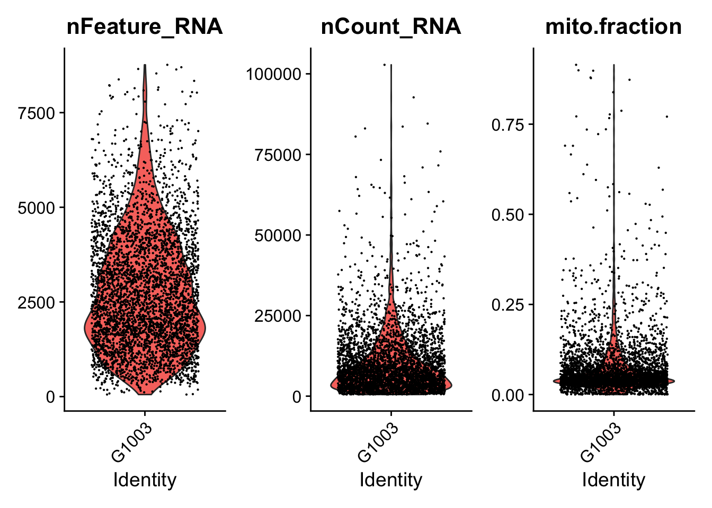
## [1] "Filtering: 3 G910_A_T ~/CourseData/CAN_data/Module7/MTX_FILES/Richards_NatCancer_2021/G910_A_T/"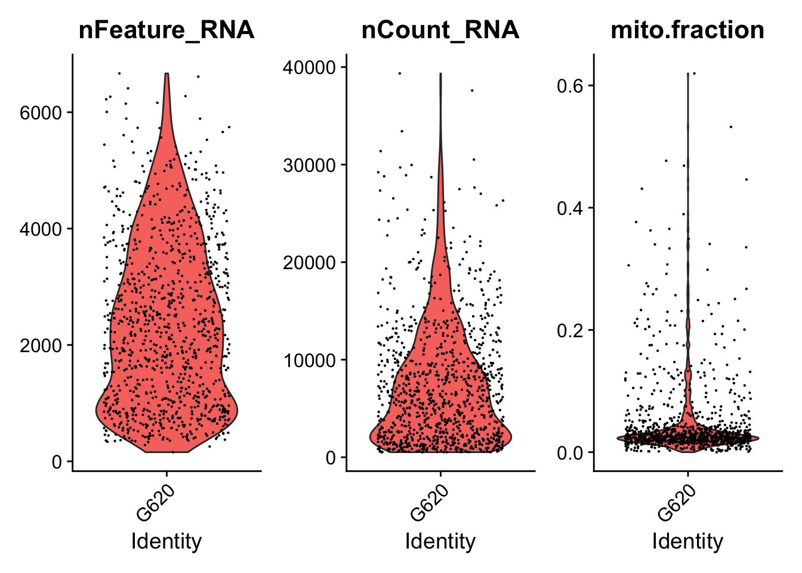
## [1] "Filtering: 4 G945_I_T ~/CourseData/CAN_data/Module7/MTX_FILES/Richards_NatCancer_2021/G945_I_T/"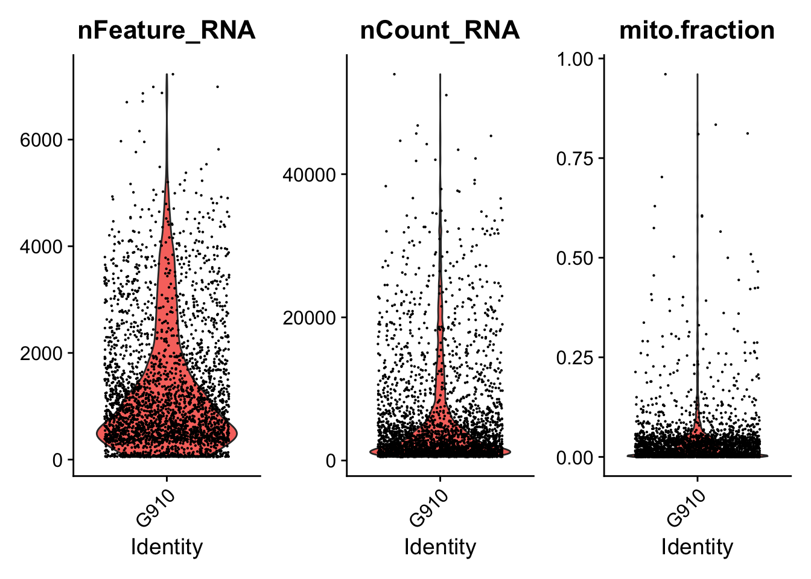
## [1] "Filtering: 5 G946_I_T ~/CourseData/CAN_data/Module7/MTX_FILES/Richards_NatCancer_2021/G946_I_T/"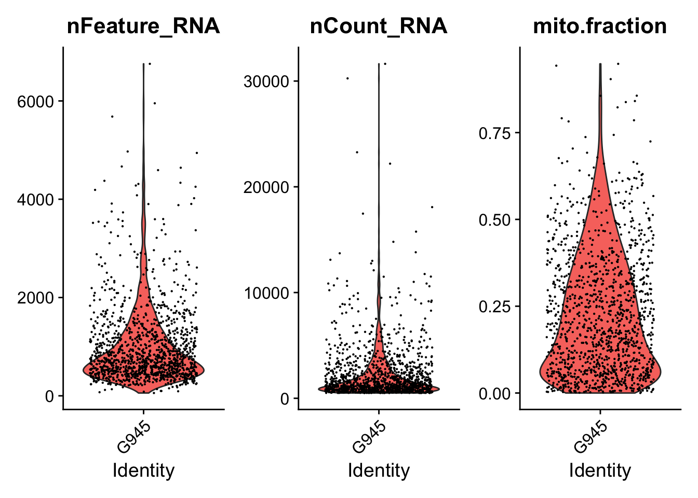
## [1] "Filtering: 6 G967_A_T ~/CourseData/CAN_data/Module7/MTX_FILES/Richards_NatCancer_2021/G967_A_T/"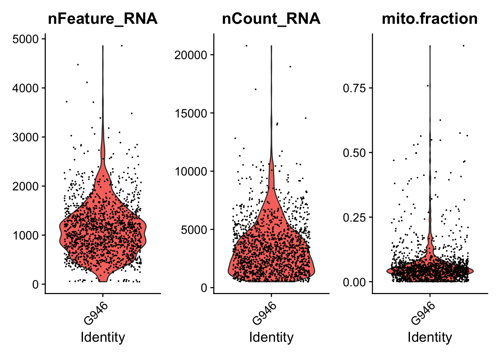
## [1] "Filtering: 7 G983_A_T ~/CourseData/CAN_data/Module7/MTX_FILES/Richards_NatCancer_2021/G983_A_T/"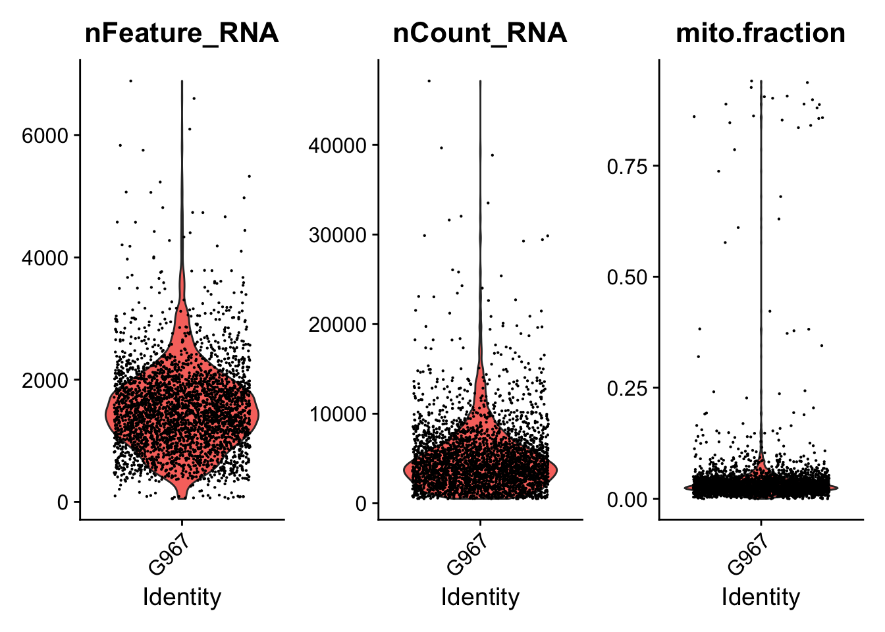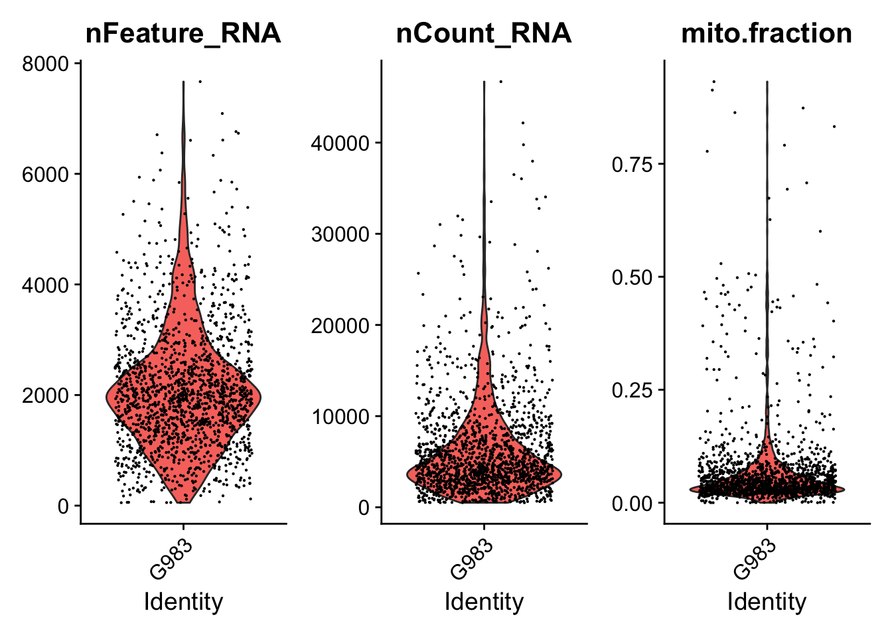
####################################
### Merge Seurat objects RNA assay
####################################
FirstSeuratObject <- SeuratObjectsFiltered[[1]]
RestOfSeuratObjectsFiltered <- SeuratObjectsFiltered[c(2:length(DatasetIds))]
RestOfDatasetsIds <- unlist(DatasetIds[c(2:length(DatasetIds))])
seurat.object.merged <- merge(FirstSeuratObject, y = RestOfSeuratObjectsFiltered, project = PrefixOutfiles)
seurat.object.merged <- AddMetaData(object = seurat.object.merged, metadata = seurat.object.merged@meta.data$dataset.label, col.name = "dataset")
seurat.object.list <- SplitObject(seurat.object.merged, split.by = "dataset.label")
print(seurat.object.list)## $G1003_A_T
## An object of class Seurat
## 17974 features across 3689 samples within 1 assay
## Active assay: RNA (17974 features, 0 variable features)
##
## $G620_T
## An object of class Seurat
## 17974 features across 964 samples within 1 assay
## Active assay: RNA (17974 features, 0 variable features)
##
## $G910_A_T
## An object of class Seurat
## 17974 features across 2815 samples within 1 assay
## Active assay: RNA (17974 features, 0 variable features)
##
## $G945_I_T
## An object of class Seurat
## 17974 features across 662 samples within 1 assay
## Active assay: RNA (17974 features, 0 variable features)
##
## $G946_I_T
## An object of class Seurat
## 17974 features across 1447 samples within 1 assay
## Active assay: RNA (17974 features, 0 variable features)
##
## $G967_A_T
## An object of class Seurat
## 17974 features across 3019 samples within 1 assay
## Active assay: RNA (17974 features, 0 variable features)
##
## $G983_A_T
## An object of class Seurat
## 17974 features across 1536 samples within 1 assay
## Active assay: RNA (17974 features, 0 variable features)1.0.4 NORMALIZE DATASETS
####################################
### Running SCTransform
####################################
for (i in 1:length(seurat.object.list)) {
dataset <- names(seurat.object.list)[[i]]
print(paste("Normalizing:", i, dataset, sep = " "))
seurat.object.list[[i]] <- SCTransform(seurat.object.list[[i]], verbose = F)
}## [1] "Normalizing: 1 G1003_A_T"
## [1] "Normalizing: 2 G620_T"
## [1] "Normalizing: 3 G910_A_T"
## [1] "Normalizing: 4 G945_I_T"
## [1] "Normalizing: 5 G946_I_T"
## [1] "Normalizing: 6 G967_A_T"
## [1] "Normalizing: 7 G983_A_T"1.0.5 SAVE EACH DATASET R_OBJECT
####################################
### Saving each dataset R object
####################################
for (i in 1:length(seurat.object.list)) {
dataset <- names(seurat.object.list)[[i]]
print(paste("Saving:", i, dataset, sep = " "))
OutfileRDS<-paste0(PathForOutfiles, "/", PrefixOutfiles, "_", dataset , "_QC_Normalization.rds")
saveRDS(seurat.object.list[[i]], file = OutfileRDS)
}## [1] "Saving: 1 G1003_A_T"
## [1] "Saving: 2 G620_T"
## [1] "Saving: 3 G910_A_T"
## [1] "Saving: 4 G945_I_T"
## [1] "Saving: 5 G946_I_T"
## [1] "Saving: 6 G967_A_T"
## [1] "Saving: 7 G983_A_T"1.0.6 OBTAIN COMPUTING TIME
####################################
### Obtain computing time used
####################################
StopWatchEnd$Overall <- Sys.time()
OutfileCPUtimes<-paste0(PathForOutfiles, "/", PrefixOutfiles, "_QC_Normalization.txt")
Headers<-paste("Step", "Time(minutes)", sep="\t")
write.table(Headers, file = OutfileCPUtimes, row.names = F, col.names = F, sep="\t", quote = F, append = T)
lapply(names(StopWatchStart), function(stepToClock) {
if (regexpr("POSIXct", class(StopWatchStart[[stepToClock]]), ignore.case = T)[1] == 1) {
TimeStart <- StopWatchStart[[stepToClock]]
TimeEnd <- StopWatchEnd[[stepToClock]]
TimeDiff <- format(difftime(TimeEnd, TimeStart, units = "min"))
ReportTime<-c(paste(stepToClock, TimeDiff, sep = "\t", collapse = ""))
write(file = OutfileCPUtimes, x=gsub(pattern = " mins", replacement = "", x = ReportTime), append = T)
}
})## [[1]]
## NULL1.0.7 FINISH
####################################
### Finish
####################################
options(warn = oldw)
writeLines(paste0("\nEND - Check:\n", PathForOutfiles, "\nFor outfiles\n\n"))##
## END - Check:
## /Users/jdiazmej/CourseData/CAN_data/Module7/OUTFILES/Richards_NatCancer_2021
## For outfiles- Javier Diaz - javier.diazmejia@gmail.com
Script based on: https://satijalab.org/seurat/articles/integration_introduction.html
- GENERAL OVERVIEW OF THIS SCRIPT
- Loads each normalized dataset R object produced by script CBW_CAN_2021_Module7_Lab1_QC_Normalization.R
- Merges and integrates datasets correcting batch effects
- Saves R object with integrated datasets
1.0.8 DEFINE ENVIRONMENT, INPUTS AND OUTDIR
1.0.8.0.0.1 Required libraries
1.0.8.0.0.2 User’s home and stopwatch to time run
## [1] "/Users/jdiazmej"1.0.8.0.0.3 Define inputs
### Run specific inputs and parameters
AnchorFinder <- "STACAS" ## Either 'STACAS' or 'SEURAT'
### /path_to/*rds infiles (R objects) from CBW_CAN_2021_Module7_Lab1__QC_Normalization.R
### Not including G945_I_T due to memory constrains and because it has high mito.fraction
PathToDatasets <- list(
"G1003_A_T" = "~/CourseData/CAN_data/Module7/OUTFILES/Richards_NatCancer_2021/Richards_NatCancer_2021_G1003_A_T_QC_Normalization.rds",
# "G945_I_T" = "~/CourseData/CAN_data/Module7/OUTFILES/Richards_NatCancer_2021/Richards_NatCancer_2021_G945_I_T_QC_Normalization.rds",
"G910_A_T" = "~/CourseData/CAN_data/Module7/OUTFILES/Richards_NatCancer_2021/Richards_NatCancer_2021_G910_A_T_QC_Normalization.rds",
"G983_A_T" = "~/CourseData/CAN_data/Module7/OUTFILES/Richards_NatCancer_2021/Richards_NatCancer_2021_G983_A_T_QC_Normalization.rds",
"G620_T" = "~/CourseData/CAN_data/Module7/OUTFILES/Richards_NatCancer_2021/Richards_NatCancer_2021_G620_T_QC_Normalization.rds",
"G946_I_T" = "~/CourseData/CAN_data/Module7/OUTFILES/Richards_NatCancer_2021/Richards_NatCancer_2021_G946_I_T_QC_Normalization.rds",
"G967_A_T" = "~/CourseData/CAN_data/Module7/OUTFILES/Richards_NatCancer_2021/Richards_NatCancer_2021_G967_A_T_QC_Normalization.rds"
)1.0.8.0.0.4 Define outputs
### Outputs
PathForOutfiles <- paste0("~/CourseData/CAN_data/Module7/OUTFILES/Richards_NatCancer_2021/", AnchorFinder, "/WITHOUT_G945_I_T") ## /path_to/out_directory
PrefixOutfiles <- "Richards_NatCancer_2021" ## Prefix for outfiles
PathForOutfiles <- gsub("^~/",paste0(UserHomeDirectory,"/"), PathForOutfiles)
dir.create(path = PathForOutfiles, recursive = T, showWarnings = F)1.0.8.0.0.5 Define default parameters
### Default parameters. Either suggested by Seurat developers, or tailored empirically.
### NOTE: when datasets being integrated have fewer anchors than needed for the integration,
### step IntegrateData() will produce an error:
### `Error in nn2(data = c(15.4534704633918, 15.4534704633918, 15.4534704633918, :
### Cannot find more nearest neighbours than there are points`
### To fix this using Seurat's anchor finder in step FindIntegrationAnchors() lower the k.filter value (e.g. 150, default = 200)
### To fix this using STACAS anchor finder, in step FilterAnchors.STACAS() increase the dist.pct and dist.thr values (e.g. 0.9, default = 0.8)
### More info: https://github.com/satijalab/seurat/issues/2056
DefaultParameters <- list(
### Parameters for dataset integration
IntegrationNFeatures = 3000,
StacasVarGenesIntegratedN = 500,
PcaDimsUse = c(1:20),
SeuratFindAnchorsKFilter = 200, #default 200
StacasDistPct = 0.9, #default 0.8
StacasDistThr = 0.9, #default 0.8
### ReferenceDatasets = either a <comma> delimited list of dataset ID(s) to be used as
### references for anchors or 'NA' to compare all-vs-all
ReferenceDatasets = "NA"
)1.0.8.0.0.6 Report R sessionInfo
OutfileRSessionInfo<-paste0(PathForOutfiles, "/", PrefixOutfiles, "_SingleCell_2_Integration_RSessionInfo.txt")
writeLines(capture.output(sessionInfo()), OutfileRSessionInfo)
capture.output(sessionInfo())## [1] "R version 4.0.2 (2020-06-22)"
## [2] "Platform: x86_64-apple-darwin17.0 (64-bit)"
## [3] "Running under: macOS High Sierra 10.13.6"
## [4] ""
## [5] "Matrix products: default"
## [6] "BLAS: /System/Library/Frameworks/Accelerate.framework/Versions/A/Frameworks/vecLib.framework/Versions/A/libBLAS.dylib"
## [7] "LAPACK: /Library/Frameworks/R.framework/Versions/4.0/Resources/lib/libRlapack.dylib"
## [8] ""
## [9] "locale:"
## [10] "[1] en_CA.UTF-8/en_CA.UTF-8/en_CA.UTF-8/C/en_CA.UTF-8/en_CA.UTF-8"
## [11] ""
## [12] "attached base packages:"
## [13] "[1] stats graphics grDevices utils datasets methods base "
## [14] ""
## [15] "other attached packages:"
## [16] "[1] STACAS_1.1.0 future_1.21.0 SeuratObject_4.0.1 Seurat_4.0.2 "
## [17] ""
## [18] "loaded via a namespace (and not attached):"
## [19] " [1] Rtsne_0.15 colorspace_2.0-1 deldir_0.2-10 ellipsis_0.3.2 "
## [20] " [5] ggridges_0.5.3 rstudioapi_0.13 spatstat.data_2.1-0 farver_2.1.0 "
## [21] " [9] leiden_0.3.8 listenv_0.8.0 ggrepel_0.9.1 fansi_0.5.0 "
## [22] " [13] codetools_0.2-18 splines_4.0.2 knitr_1.33 polyclip_1.10-0 "
## [23] " [17] jsonlite_1.7.2 packrat_0.6.0 ica_1.0-2 cluster_2.1.2 "
## [24] " [21] png_0.1-7 uwot_0.1.10 shiny_1.6.0 sctransform_0.3.2 "
## [25] " [25] spatstat.sparse_2.0-0 compiler_4.0.2 httr_1.4.2 assertthat_0.2.1 "
## [26] " [29] Matrix_1.3-3 fastmap_1.1.0 lazyeval_0.2.2 later_1.2.0 "
## [27] " [33] htmltools_0.5.1.1 tools_4.0.2 igraph_1.2.6 gtable_0.3.0 "
## [28] " [37] glue_1.4.2 RANN_2.6.1 reshape2_1.4.4 dplyr_1.0.6 "
## [29] " [41] Rcpp_1.0.6 scattermore_0.7 jquerylib_0.1.4 vctrs_0.3.8 "
## [30] " [45] nlme_3.1-152 lmtest_0.9-38 xfun_0.23 stringr_1.4.0 "
## [31] " [49] globals_0.14.0 mime_0.10 miniUI_0.1.1.1 lifecycle_1.0.0 "
## [32] " [53] irlba_2.3.3 goftest_1.2-2 MASS_7.3-54 zoo_1.8-9 "
## [33] " [57] scales_1.1.1 spatstat.core_2.1-2 promises_1.2.0.1 spatstat.utils_2.1-0 "
## [34] " [61] parallel_4.0.2 RColorBrewer_1.1-2 yaml_2.2.1 reticulate_1.20 "
## [35] " [65] pbapply_1.4-3 gridExtra_2.3 ggplot2_3.3.3 sass_0.4.0 "
## [36] " [69] rpart_4.1-15 stringi_1.6.2 highr_0.9 rlang_0.4.11 "
## [37] " [73] pkgconfig_2.0.3 matrixStats_0.59.0 evaluate_0.14 lattice_0.20-44 "
## [38] " [77] ROCR_1.0-11 purrr_0.3.4 tensor_1.5 labeling_0.4.2 "
## [39] " [81] patchwork_1.1.1 htmlwidgets_1.5.3 cowplot_1.1.1 tidyselect_1.1.1 "
## [40] " [85] parallelly_1.25.0 RcppAnnoy_0.0.18 plyr_1.8.6 magrittr_2.0.1 "
## [41] " [89] bookdown_0.22 R6_2.5.0 generics_0.1.0 DBI_1.1.1 "
## [42] " [93] withr_2.4.2 mgcv_1.8-35 pillar_1.6.1 fitdistrplus_1.1-5 "
## [43] " [97] survival_3.2-11 abind_1.4-5 tibble_3.1.2 future.apply_1.7.0 "
## [44] "[101] crayon_1.4.1 KernSmooth_2.23-20 utf8_1.2.1 spatstat.geom_2.1-0 "
## [45] "[105] plotly_4.9.3 rmarkdown_2.8 grid_4.0.2 data.table_1.14.0 "
## [46] "[109] digest_0.6.27 xtable_1.8-4 tidyr_1.1.3 httpuv_1.6.1 "
## [47] "[113] munsell_0.5.0 viridisLite_0.4.0 bslib_0.2.5.1 "1.0.8.0.0.7 Define number of cores and RAM for parallelization
NumbCores <- 1
MaxGlobalVariables <- 10000
### Using plan(strategy = "multisession", workers = NumbCoresToUse)
### failed in the CBW AWS instance, with error:
### Failed to retrieve the result of MulticoreFuture (future_lapply-1) from the forked worker (on localhost; PID 194469).
### Post-mortem diagnostic: No process exists with this PID, i.e. the forked localhost worker is no longer alive.
### This seems to be related to not having enough RAM in the AWS instance allocated for the course
### To fix this for the CBW CAN, we are:
### a) removing from the analysis a dataset (G945_I_T) with high mito.fraction
### b) Using `plan(strategy = "sequential")` in script CBW_CAN_SingleCell_2_Integration.R (i.e. no parallelization)
###
### Notes: `options(future.globals.maxSize = MaxGlobalVariables)` sets the maximum allowed size in bytes.
### To set it to 10GB, you would run options(future.globals.maxSize = 10000 * 1024^2).
### Increasing the value of future.globals.maxSize will increase your RAM usage so set this number mindfully.
### https://satijalab.org/seurat/archive/v3.1/future_vignette.html
### https://github.com/satijalab/seurat/issues/3249
if (regexpr("^MAX$", NumbCores, ignore.case = T)[1] == 1) {
NumbCoresToUse <- availableCores()[[1]]
}else if (regexpr("^[0-9]+$", NumbCores, ignore.case = T)[1] == 1) {
NumbCoresToUse <- as.numeric(NumbCores)
}else{
stop(paste0("Unexpected format for NumbCores: ", NumbCores, "\n"))
}
if (NumbCoresToUse == 1) {
plan(strategy = "sequential")
writeLines(paste0("\n", "*** Running: in 'sequential' mode with ", NumbCoresToUse, " core ***", "\n"))
}else if (NumbCoresToUse > 1) {
# plan(strategy = "multicore", workers = NumbCoresToUse)
plan(strategy = "multisession", workers = NumbCoresToUse)
writeLines(paste0("\n", "*** Running: in 'multicore' mode with ", NumbCoresToUse, " cores ***", "\n"))
}else{
stop(paste0("Unexpected NumbCores = ", NumbCoresToUse))
}##
## *** Running: in 'sequential' mode with 1 core ***1.0.9 LOAD R OBJECTS
####################################
### Load R Objects
####################################
InputsTable <- data.frame(matrix(unlist(PathToDatasets), nrow=length(PathToDatasets), byrow=TRUE))
rownames(InputsTable) <- names(PathToDatasets)
colnames(InputsTable)<-c("PathToRObject")
NumberOfDatasets <- nrow(InputsTable)
seurat.object.list <- list()
for (dataset in rownames(InputsTable)) {
print(dataset)
DatasetIndexInInputsTable <- which(x = rownames(InputsTable) == dataset)
InputRobject <- InputsTable[dataset,"PathToRObject"]
seurat.object.list[[DatasetIndexInInputsTable]] <- readRDS(InputRobject)
}## [1] "G1003_A_T"
## [1] "G910_A_T"
## [1] "G983_A_T"
## [1] "G620_T"
## [1] "G946_I_T"
## [1] "G967_A_T"1.0.10 INTEGRATE DATASETS
####################################
### Get reference datasets
####################################
if (regexpr("^NA$", DefaultParameters$ReferenceDatasets , ignore.case = T)[1] == 1) {
ReferenceDatasets.indices <- c(1:nrow(InputsTable))
print("Will run all pairwise dataset comparisons")
}else{
ReferenceDatasets.list <- unlist(strsplit(DefaultParameters$ReferenceDatasets, ","))
NumberOfFoundReferenceDatasetIDs <- sum(ReferenceDatasets.list %in% rownames(InputsTable) == T)
if (NumberOfFoundReferenceDatasetIDs == length(ReferenceDatasets.list)) {
ReferenceDatasets.indices <- match(ReferenceDatasets.list, rownames(InputsTable))
}else{
stop(paste0("Requested ", length(ReferenceDatasets.list), " datasets as references, but found ", NumberOfFoundReferenceDatasetIDs))
}
print(paste0("Will use datasets: ", paste(as.character(ReferenceDatasets.indices), sep = "", collapse = ",")))
}## [1] "Will run all pairwise dataset comparisons"####################################
### Get integration anchors
####################################
if (regexpr("^STACAS$", AnchorFinder, ignore.case = T)[1] == 1) {
####################################
### Get anchors with STACAS
####################################
print("Get integration anchors with STACAS")
seurat.object.anchors.unfiltered <- FindAnchors.STACAS(object.list = seurat.object.list, dims=DefaultParameters$PcaDimsUse,
anchor.features=DefaultParameters$StacasVarGenesIntegratedN, reference = ReferenceDatasets.indices, verbose = F)
seurat.object.anchors <- FilterAnchors.STACAS(seurat.object.anchors.unfiltered, dist.thr = DefaultParameters$StacasDistPct, DefaultParameters$StacasDistThr)
SampleTree <- SampleTree.STACAS(seurat.object.anchors)
} else if (regexpr("^Seurat$", AnchorFinder , ignore.case = T)[1] == 1) {
####################################
### Get anchors with Seurat
####################################
print("Get integration anchors with SEURAT")
seurat.object.integratedfeatures <- SelectIntegrationFeatures(object.list = seurat.object.list, nfeatures = DefaultParameters$IntegrationNFeatures, verbose = F)
seurat.object.list <- PrepSCTIntegration(object.list = seurat.object.list, anchor.features = seurat.object.integratedfeatures, verbose = F)
seurat.object.anchors <- FindIntegrationAnchors(object.list = seurat.object.list, k.filter = DefaultParameters$SeuratFindAnchorsKFilter, normalization.method = "SCT",
dims=DefaultParameters$PcaDimsUse, anchor.features = seurat.object.integratedfeatures, reference = ReferenceDatasets.indices,
verbose = F)
SampleTree <- NULL
} else {
stop("ERROR: unexpected anchors function")
}## [1] "Get integration anchors with STACAS"## Preparing PCA embeddings for objects...## 1/6 2/6 3/6 4/6 5/6 6/6## Filter anchors using distance threshold t=0.900## An AnchorSet object containing 15946 anchors between 6 Seurat objects
## This can be used as input to IntegrateData.1.0.11 INTEGRATE DATASETS
####################################
### Integrate datasets
####################################
seurat.object.integrated <- IntegrateData(anchorset = seurat.object.anchors, normalization.method = "SCT", sample.tree = SampleTree, preserve.order = T, verbose = T)## Merging dataset 4 into 1## Extracting anchors for merged samples## Finding integration vectors## Finding integration vector weights## Integrating data## Merging dataset 2 into 5## Extracting anchors for merged samples## Finding integration vectors## Finding integration vector weights## Integrating data## Merging dataset 3 into 1 4## Extracting anchors for merged samples## Finding integration vectors## Finding integration vector weights## Integrating data## Merging dataset 5 2 into 1 4 3## Extracting anchors for merged samples## Finding integration vectors## Finding integration vector weights## Integrating data## Merging dataset 6 into 1 4 3 5 2## Extracting anchors for merged samples## Finding integration vectors## Finding integration vector weights## Integrating data## An object of class Seurat
## 34523 features across 13470 samples within 3 assays
## Active assay: integrated (500 features, 500 variable features)
## 2 other assays present: RNA, SCT1.0.12 SAVE INTEGRATED R_OBJECT
1.0.13 OBTAIN COMPUTING TIME
####################################
### Obtain computing time used
####################################
StopWatchEnd$Overall <- Sys.time()
OutfileCPUtimes<-paste0(PathForOutfiles, "/", PrefixOutfiles, "_Integration_CPUtimes.txt")
write(file = OutfileCPUtimes, x = paste("#Number_of_cores_used", NumbCoresToUse, sep = "\t", collapse = ""))
write(file = OutfileCPUtimes, x = paste("#MaxGlobalVariables", MaxGlobalVariables, sep = "\t", collapse = ""), append = T)
Headers<-paste("Step", "Time(minutes)", sep="\t")
write.table(Headers, file = OutfileCPUtimes, row.names = F, col.names = F, sep="\t", quote = F, append = T)
lapply(names(StopWatchStart), function(stepToClock) {
if (regexpr("POSIXct", class(StopWatchStart[[stepToClock]]), ignore.case = T)[1] == 1) {
TimeStart <- StopWatchStart[[stepToClock]]
TimeEnd <- StopWatchEnd[[stepToClock]]
TimeDiff <- format(difftime(TimeEnd, TimeStart, units = "min"))
ReportTime<-c(paste(stepToClock, TimeDiff, sep = "\t", collapse = ""))
write(file = OutfileCPUtimes, x=gsub(pattern = " mins", replacement = "", x = ReportTime), append = T)
}
})## [[1]]
## NULL1.0.14 FINISH
####################################
### Finish
####################################
options(warn = oldw)
writeLines(paste0("\nEND - Check:\n", PathForOutfiles, "\nFor outfiles\n\n"))##
## END - Check:
## /Users/jdiazmej/CourseData/CAN_data/Module7/OUTFILES/Richards_NatCancer_2021/STACAS/WITHOUT_G945_I_T
## For outfiles- Javier Diaz - javier.diazmejia@gmail.com
Script based on: https://satijalab.org/seurat/articles/integration_introduction.html
- GENERAL OVERVIEW OF THIS SCRIPT
- Loads integrated datasets R object produced by script CBW_CAN_2021_Module7_Lab2_Integration.R
- Process integrated datasets as a whole, including:
- dimension reduction
- ‘global’ cell clustering
- UMAP plots by global cell clusters, sample, requested genes and metadata
- Violin plots
- Dot plots
- Saves R object with PCA, clustering and dimension reduction
1.0.15 DEFINE ENVIRONMENT, INPUTS AND OUTDIR
1.0.15.0.0.1 Required libraries
library(Seurat) # (CRAN) main scRNA-seq analysis package
library(future) # (CRAN) to run parallel processes
library(ggplot2) # (CRAN) to generate enhanced plots
library(DropletUtils) # (Bioconductor) to write out MTX format files## Loading required package: SingleCellExperiment## Loading required package: SummarizedExperiment## Loading required package: GenomicRanges## Loading required package: stats4## Loading required package: BiocGenerics## Loading required package: parallel##
## Attaching package: 'BiocGenerics'## The following objects are masked from 'package:parallel':
##
## clusterApply, clusterApplyLB, clusterCall, clusterEvalQ, clusterExport, clusterMap,
## parApply, parCapply, parLapply, parLapplyLB, parRapply, parSapply, parSapplyLB## The following objects are masked from 'package:stats':
##
## IQR, mad, sd, var, xtabs## The following objects are masked from 'package:base':
##
## anyDuplicated, append, as.data.frame, basename, cbind, colnames, dirname, do.call,
## duplicated, eval, evalq, Filter, Find, get, grep, grepl, intersect, is.unsorted,
## lapply, Map, mapply, match, mget, order, paste, pmax, pmax.int, pmin, pmin.int,
## Position, rank, rbind, Reduce, rownames, sapply, setdiff, sort, table, tapply,
## union, unique, unsplit, which, which.max, which.min## Loading required package: S4Vectors##
## Attaching package: 'S4Vectors'## The following object is masked from 'package:future':
##
## values## The following object is masked from 'package:base':
##
## expand.grid## Loading required package: IRanges## Loading required package: GenomeInfoDb## Loading required package: Biobase## Welcome to Bioconductor
##
## Vignettes contain introductory material; view with 'browseVignettes()'. To cite
## Bioconductor, see 'citation("Biobase")', and for packages 'citation("pkgname")'.## Loading required package: DelayedArray## Loading required package: matrixStats##
## Attaching package: 'matrixStats'## The following objects are masked from 'package:Biobase':
##
## anyMissing, rowMedians##
## Attaching package: 'DelayedArray'## The following objects are masked from 'package:matrixStats':
##
## colMaxs, colMins, colRanges, rowMaxs, rowMins, rowRanges## The following objects are masked from 'package:base':
##
## aperm, apply, rowsum##
## Attaching package: 'SummarizedExperiment'## The following object is masked from 'package:SeuratObject':
##
## Assays## The following object is masked from 'package:Seurat':
##
## Assays1.0.15.0.0.2 User’s home and stopwatch to time run
## [1] "/Users/jdiazmej"1.0.15.0.0.3 Define inputs
### Run specific inputs and parameters
AnchorFinder <- "STACAS" ## Either 'STACAS' or 'SEURAT'
PathToIntegratedRds <- paste0("~/CourseData/CAN_data/Module7/OUTFILES/Richards_NatCancer_2021/", AnchorFinder, "/WITHOUT_G945_I_T", "/Richards_NatCancer_2021_Integration.rds") ### /path_to/*rds (R object) from CBW_CAN_2021_Module7_Lab2_Integration.R
InfileMetadata <- "~/CourseData/CAN_data/Module7/METADATA/Richards_NatCancer_2021_without_G945_I_T.metadata.tsv"
MetedataPropsToPlot <- c("cell_cluster.cell_type", "cell_type")
PathToIntegratedRds <- gsub("^~/",paste0(UserHomeDirectory,"/"), PathToIntegratedRds)
SelectedGenes <- c("PTPRC", "MOG", "MAG", "EGFR", "CD3D", "CD2", "ITGAM", "FCGR3A", "CD14", "TMEM119")
ASSAY <- "SCT"
NumberOfDimensions <- 20
ClustersForDotPlot2 <- c(0,1,4,8,10)
DimRedMethodPlots <- "umap"
SampleForInferCNV <- "G983_A_T" ## Filtered counts and cell cluster identities from this sample will be used for CBW_CAN_SingleCell_Lab6_InferCNV.R1.0.15.0.0.4 Define outputs
### Outputs
PathForOutfiles <- paste0("~/CourseData/CAN_data/Module7/OUTFILES/Richards_NatCancer_2021/", AnchorFinder, "/WITHOUT_G945_I_T") ## /path_to/out_directory
PrefixOutfiles <- "Richards_NatCancer_2021" ## Prefix for outfiles
PathForOutfiles <- gsub("^~/",paste0(UserHomeDirectory,"/"), PathForOutfiles)
dir.create(path = PathForOutfiles, recursive = T, showWarnings = F)1.0.15.0.0.5 Define default parameters
### Default parameters. Either suggested by Seurat developers, or tailored empirically.
DefaultParameters <- list(
### Parameters for QC plots
CellPropertiesToQC = c("nFeature_RNA", "nCount_RNA", "mito.fraction"),
### Parameters for clustering
Resolution = 0.5,
### Parameters for datasets comparison
AssaysForAverageGETables = c("RNA", "SCT"),
### Parameters for t-SNE plots
MinNumberOfCellsToReducePerplexity = 150,
ReducedPerplexity = 7
)
### Dimension reduction methods
DimensionReductionMethods<-list()
DimensionReductionMethods$umap$name <-"UMAP"
DimensionReductionMethods$tsne$name <-"TSNE"
DimensionReductionMethods$umap$run <-as.function(RunUMAP)
DimensionReductionMethods$tsne$run <-as.function(RunTSNE)1.0.15.0.0.6 Report R sessionInfo
OutfileRSessionInfo<-paste0(PathForOutfiles, "/", PrefixOutfiles, "_SingleCell_3_PCA_Clustering_DimReduction_RSessionInfo.txt")
writeLines(capture.output(sessionInfo()), OutfileRSessionInfo)
capture.output(sessionInfo())## [1] "R version 4.0.2 (2020-06-22)"
## [2] "Platform: x86_64-apple-darwin17.0 (64-bit)"
## [3] "Running under: macOS High Sierra 10.13.6"
## [4] ""
## [5] "Matrix products: default"
## [6] "BLAS: /System/Library/Frameworks/Accelerate.framework/Versions/A/Frameworks/vecLib.framework/Versions/A/libBLAS.dylib"
## [7] "LAPACK: /Library/Frameworks/R.framework/Versions/4.0/Resources/lib/libRlapack.dylib"
## [8] ""
## [9] "locale:"
## [10] "[1] en_CA.UTF-8/en_CA.UTF-8/en_CA.UTF-8/C/en_CA.UTF-8/en_CA.UTF-8"
## [11] ""
## [12] "attached base packages:"
## [13] "[1] parallel stats4 stats graphics grDevices utils datasets methods base "
## [14] ""
## [15] "other attached packages:"
## [16] " [1] DropletUtils_1.8.0 SingleCellExperiment_1.10.1 SummarizedExperiment_1.18.2"
## [17] " [4] DelayedArray_0.14.1 matrixStats_0.59.0 Biobase_2.48.0 "
## [18] " [7] GenomicRanges_1.40.0 GenomeInfoDb_1.24.2 IRanges_2.22.2 "
## [19] "[10] S4Vectors_0.26.1 BiocGenerics_0.34.0 ggplot2_3.3.3 "
## [20] "[13] STACAS_1.1.0 future_1.21.0 SeuratObject_4.0.1 "
## [21] "[16] Seurat_4.0.2 "
## [22] ""
## [23] "loaded via a namespace (and not attached):"
## [24] " [1] plyr_1.8.6 igraph_1.2.6 lazyeval_0.2.2 splines_4.0.2 "
## [25] " [5] BiocParallel_1.22.0 listenv_0.8.0 scattermore_0.7 digest_0.6.27 "
## [26] " [9] htmltools_0.5.1.1 fansi_0.5.0 magrittr_2.0.1 tensor_1.5 "
## [27] " [13] cluster_2.1.2 ROCR_1.0-11 limma_3.44.3 globals_0.14.0 "
## [28] " [17] R.utils_2.10.1 spatstat.sparse_2.0-0 colorspace_2.0-1 ggrepel_0.9.1 "
## [29] " [21] xfun_0.23 dplyr_1.0.6 crayon_1.4.1 RCurl_1.98-1.3 "
## [30] " [25] jsonlite_1.7.2 spatstat.data_2.1-0 survival_3.2-11 zoo_1.8-9 "
## [31] " [29] glue_1.4.2 polyclip_1.10-0 gtable_0.3.0 zlibbioc_1.34.0 "
## [32] " [33] XVector_0.28.0 leiden_0.3.8 Rhdf5lib_1.10.1 future.apply_1.7.0 "
## [33] " [37] HDF5Array_1.16.1 abind_1.4-5 scales_1.1.1 edgeR_3.30.3 "
## [34] " [41] DBI_1.1.1 miniUI_0.1.1.1 Rcpp_1.0.6 viridisLite_0.4.0 "
## [35] " [45] xtable_1.8-4 dqrng_0.3.0 reticulate_1.20 spatstat.core_2.1-2 "
## [36] " [49] htmlwidgets_1.5.3 httr_1.4.2 RColorBrewer_1.1-2 ellipsis_0.3.2 "
## [37] " [53] ica_1.0-2 R.methodsS3_1.8.1 pkgconfig_2.0.3 farver_2.1.0 "
## [38] " [57] sass_0.4.0 uwot_0.1.10 deldir_0.2-10 locfit_1.5-9.4 "
## [39] " [61] utf8_1.2.1 tidyselect_1.1.1 labeling_0.4.2 rlang_0.4.11 "
## [40] " [65] reshape2_1.4.4 later_1.2.0 munsell_0.5.0 tools_4.0.2 "
## [41] " [69] generics_0.1.0 ggridges_0.5.3 evaluate_0.14 stringr_1.4.0 "
## [42] " [73] fastmap_1.1.0 yaml_2.2.1 goftest_1.2-2 knitr_1.33 "
## [43] " [77] fitdistrplus_1.1-5 purrr_0.3.4 RANN_2.6.1 packrat_0.6.0 "
## [44] " [81] pbapply_1.4-3 nlme_3.1-152 mime_0.10 R.oo_1.24.0 "
## [45] " [85] compiler_4.0.2 rstudioapi_0.13 plotly_4.9.3 png_0.1-7 "
## [46] " [89] spatstat.utils_2.1-0 tibble_3.1.2 bslib_0.2.5.1 stringi_1.6.2 "
## [47] " [93] highr_0.9 lattice_0.20-44 Matrix_1.3-3 vctrs_0.3.8 "
## [48] " [97] pillar_1.6.1 lifecycle_1.0.0 spatstat.geom_2.1-0 lmtest_0.9-38 "
## [49] "[101] jquerylib_0.1.4 RcppAnnoy_0.0.18 data.table_1.14.0 cowplot_1.1.1 "
## [50] "[105] bitops_1.0-7 irlba_2.3.3 httpuv_1.6.1 patchwork_1.1.1 "
## [51] "[109] R6_2.5.0 bookdown_0.22 promises_1.2.0.1 KernSmooth_2.23-20 "
## [52] "[113] gridExtra_2.3 parallelly_1.25.0 codetools_0.2-18 MASS_7.3-54 "
## [53] "[117] assertthat_0.2.1 rhdf5_2.32.4 withr_2.4.2 sctransform_0.3.2 "
## [54] "[121] GenomeInfoDbData_1.2.3 mgcv_1.8-35 grid_4.0.2 rpart_4.1-15 "
## [55] "[125] tidyr_1.1.3 rmarkdown_2.8 Rtsne_0.15 shiny_1.6.0 "1.0.15.0.0.7 Define number of cores and RAM for parallelization
NumbCores <- "MAX"
MaxGlobalVariables <- 10000
if (regexpr("^MAX$", NumbCores, ignore.case = T)[1] == 1) {
NumbCoresToUse <- availableCores()[[1]]
}else if (regexpr("^[0-9]+$", NumbCores, ignore.case = T)[1] == 1) {
NumbCoresToUse <- as.numeric(NumbCores)
}else{
stop(paste0("Unexpected format for NumbCores: ", NumbCores, "\n"))
}
if (NumbCoresToUse == 1) {
plan(strategy = "sequential")
writeLines(paste0("\n", "*** Running: in 'sequential' mode with ", NumbCoresToUse, " core ***", "\n"))
}else if (NumbCoresToUse > 1) {
plan(strategy = "multicore", workers = NumbCoresToUse)
writeLines(paste0("\n", "*** Running: in 'multicore' mode with ", NumbCoresToUse, " cores ***", "\n"))
}else{
stop(paste0("Unexpected NumbCores = ", NumbCoresToUse))
}##
## *** Running: in 'multicore' mode with 4 cores ***1.0.16 LOAD R OBJECT
1.0.17 REDUCE DIMENSIONS
####################################
### Obtaining principal components
####################################
seurat.object.integrated <- RunPCA(seurat.object.integrated, verbose = F)
####################################
### Generate Elbow plot
####################################
seurat.object.integrated@active.assay <- ASSAY
ForElbowPlot<-ElbowPlot(object = seurat.object.integrated, ndims = 50, reduction = "pca")
MaxYAxis<-as.integer(max(ForElbowPlot$data$stdev)+1)
OutfilePCElbowPlot <- paste0(PathForOutfiles, "/", PrefixOutfiles, "_PCElbowPlot", ".pdf")
pdf(file=OutfilePCElbowPlot, width = 7, height = 7)
print(ForElbowPlot
+ scale_x_continuous(breaks = seq(from = 0, to = 50, by=5))
+ geom_vline(xintercept = seq(from = 0, to = 50, by=5), linetype='dotted', col="red")
+ scale_y_continuous(breaks = seq(from = 0, to = MaxYAxis, by=0.5))
+ geom_hline(yintercept = seq(from = 0, to = MaxYAxis, by=0.5), linetype='dotted', col="red")
)
dev.off()## quartz_off_screen
## 2print(ForElbowPlot
+ scale_x_continuous(breaks = seq(from = 0, to = 50, by=5))
+ geom_vline(xintercept = seq(from = 0, to = 50, by=5), linetype='dotted', col="red")
+ scale_y_continuous(breaks = seq(from = 0, to = MaxYAxis, by=0.5))
+ geom_hline(yintercept = seq(from = 0, to = MaxYAxis, by=0.5), linetype='dotted', col="red")
)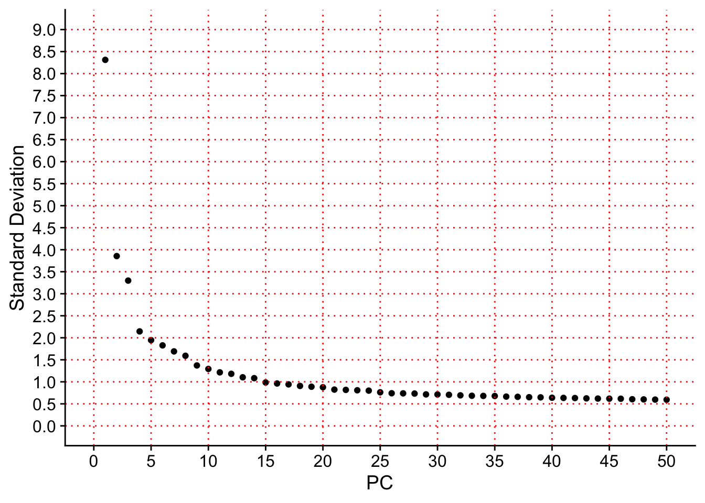
####################################
### Run dimension reductions using integrated data
####################################
writeLines("\n*** Run dimension reductions using integrated data ***\n")##
## *** Run dimension reductions using integrated data ***PcaDimsUse <- c(1:NumberOfDimensions)
for (dim_red_method in names(DimensionReductionMethods)) {
####################################
### Run non-linear dimension reductions using integrated data
####################################
### NOTES:
### In RunTSNE: if the number of cells is too small, user may get error:
### `Error in Rtsne.default(X = as.matrix(x = data.use), dims = dim.embed, : Perplexity is too large.`
### User can try tunning down the default RunTSNE(..., perplexity=30) to say 5 or 10
###
### Also using RunTSNE(..., check_duplicates = F) to skip cases where cells happen to have the same values after PCA reduction
if (("tsne" %in% dim_red_method == T) & (length(colnames(seurat.object.integrated)) < DefaultParameters$MinNumberOfCellsToReducePerplexity)) {
writeLines(paste0("\n*** Using reduced perplexity = ", DefaultParameters$ReducedPerplexity, " because found ", length(colnames(seurat.object.integrated)), " cells", " ***\n"))
seurat.object.integrated <- DimensionReductionMethods[[dim_red_method]][["run"]](object = seurat.object.integrated, dims = PcaDimsUse, perplexity = DefaultParameters$ReducedPerplexity, check_duplicates = F)
}else if ("tsne" %in% dim_red_method == T) {
seurat.object.integrated <- DimensionReductionMethods[[dim_red_method]][["run"]](object = seurat.object.integrated, dims = PcaDimsUse, check_duplicates = F)
}else if ("umap" %in% dim_red_method == T) {
seurat.object.integrated <- DimensionReductionMethods[[dim_red_method]][["run"]](object = seurat.object.integrated, dims = PcaDimsUse, umap.method = "uwot")
}
###################################
### Write out dimension reduction coordinates
####################################
Outfile.con <- bzfile(paste0(PathForOutfiles, "/", PrefixOutfiles, "_", DimensionReductionMethods[[dim_red_method]][["name"]], "Plot_Coordinates", ".tsv.bz2"), "w")
Headers<-paste("Barcode",paste(colnames(seurat.object.integrated@reductions[[dim_red_method]]@cell.embeddings), sep="", collapse="\t"), sep="\t", collapse = "\t")
write.table(Headers, file = Outfile.con, row.names = F, col.names = F, sep="\t", quote = F)
write.table(seurat.object.integrated@reductions[[dim_red_method]]@cell.embeddings, file = Outfile.con, row.names = T, col.names = F, sep="\t", quote = F, append = T)
close(Outfile.con)
}## 14:30:52 UMAP embedding parameters a = 0.9922 b = 1.112## 14:30:52 Read 13470 rows and found 20 numeric columns## 14:30:52 Using Annoy for neighbor search, n_neighbors = 30## 14:30:52 Building Annoy index with metric = cosine, n_trees = 50## 0% 10 20 30 40 50 60 70 80 90 100%## [----|----|----|----|----|----|----|----|----|----|## **************************************************|
## 14:30:53 Writing NN index file to temp file /var/folders/6t/btp1jy1n5kx9qxp01fqkq7yc0000gp/T//RtmpWl0868/filee8424cc310f
## 14:30:53 Searching Annoy index using 4 threads, search_k = 3000
## 14:30:55 Annoy recall = 100%
## 14:30:56 Commencing smooth kNN distance calibration using 4 threads
## 14:30:57 Initializing from normalized Laplacian + noise
## 14:30:58 Commencing optimization for 200 epochs, with 577722 positive edges
## 14:31:05 Optimization finished1.0.18 CLUSTER CELLS
####################################
### Globally cluster cells using integrated data
####################################
writeLines("\n*** Globally cluster cells using integrated data ***\n")##
## *** Globally cluster cells using integrated data ***options(scipen=10) ## Needed to avoid an 'Error in file(file, "rt") : cannot open the connection'
seurat.object.integrated <- FindNeighbors(object = seurat.object.integrated, dims = PcaDimsUse)## Computing nearest neighbor graph## Computing SNN## Modularity Optimizer version 1.3.0 by Ludo Waltman and Nees Jan van Eck
##
## Number of nodes: 13470
## Number of edges: 471947
##
## Running Louvain algorithm...
## Maximum modularity in 10 random starts: 0.8971
## Number of communities: 14
## Elapsed time: 2 seconds####################################
### Write out cell-cluster identities
####################################
CellBarcodes <- rownames(seurat.object.integrated@meta.data)
CellClusters <- seurat.object.integrated@meta.data$seurat_clusters
Headers<-paste("Cell_barcode", paste0("seurat_cluster_r", DefaultParameters$Resolution), sep="\t")
clusters_data<-paste(CellBarcodes, CellClusters, sep="\t")
Outfile.con <- bzfile(paste0(PathForOutfiles, "/", PrefixOutfiles, "_GlobalClustering_CellClusters.tsv.bz2"), "w")
write.table(Headers, file = Outfile.con, row.names = F, col.names = F, sep="\t", quote = F)
write.table(data.frame(clusters_data), file = Outfile.con, row.names = F, col.names = F, sep="\t", quote = F, append = T)
close(Outfile.con)
####################################
### Write out number of cells per cluster
####################################
Outfile.con <- bzfile(paste0(PathForOutfiles, "/", PrefixOutfiles, "_GlobalClustering_NumbCellsPerCluster.tsv.bz2"), "w")
Headers<-paste("Cluster", "Number_of_cells", sep="\t", collapse = "")
write.table(Headers, file = Outfile.con, row.names = F, col.names = F, sep="\t", quote = F)
write.table(table(CellClusters), file = Outfile.con, row.names = F, col.names = F, sep="\t", quote = F, append = T)
close(Outfile.con)
####################################
### Print out the integrated matrices and cell cluster identities for CBW_CAN_SingleCell_Lab6_InferCNV.R
####################################
Idents(seurat.object.integrated) <- "dataset"
### Subset sample
seurat.object.integrated.subset <- subset(x = seurat.object.integrated, idents = SampleForInferCNV)
print(seurat.object.integrated.subset)## An object of class Seurat
## 34523 features across 1536 samples within 3 assays
## Active assay: SCT (16049 features, 0 variable features)
## 2 other assays present: RNA, integrated
## 3 dimensional reductions calculated: pca, umap, tsneASSAY <- "SCT"
### Write out count matrices in MTX format
OutdirMTX <- paste0("~/CourseData/CAN_data/Module7/OUTFILES/Richards_NatCancer_2021/", AnchorFinder, "/WITHOUT_G945_I_T",
"/INTEGRATED_MATRIX_", SampleForInferCNV, "/", ASSAY, "/MTX")
dir.create(file.path(OutdirMTX), showWarnings = F, recursive = T)
write10xCounts(path = OutdirMTX, x = seurat.object.integrated.subset@assays[[ASSAY]]@counts, gene.type="Gene Expression", overwrite=T, type="sparse", version="3")
### Write out cell-cluster identities
CellBarcodes <- rownames(seurat.object.integrated.subset@meta.data)
CellClusters <- seurat.object.integrated.subset@meta.data$seurat_clusters
clusters_data<-paste(CellBarcodes, CellClusters, sep="\t")
Outfile.con <- bzfile(paste0(PathForOutfiles, "/", PrefixOutfiles, "_GlobalClustering_CellClusters_", SampleForInferCNV, ".tsv.bz2"), "w")
write.table(data.frame(clusters_data), file = Outfile.con, row.names = F, col.names = F, sep="\t", quote = F, append = T)
close(Outfile.con)1.0.19 GENERATE UMAP PLOTS
####################################
### Colour dimension reduction plots by global cell-clusters
####################################
plots <- DimPlot(seurat.object.integrated, group.by = c("seurat_clusters"), combine = F, reduction = DimRedMethodPlots, label = T, label.size = 10)
plots <- lapply(X = plots, FUN = function(x) x + theme(legend.position = "right") + guides(color = guide_legend(override.aes = list(size = 3))))
OutfilePdf<-paste0(PathForOutfiles, "/", PrefixOutfiles, "_", DimensionReductionMethods[[DimRedMethodPlots]][["name"]], "Plot_GlobalClustering_ColourByCellClusters", ".pdf")
pdf(file=OutfilePdf, width = 8, height = 7)
print(plots)## [[1]]## quartz_off_screen
## 2## [[1]]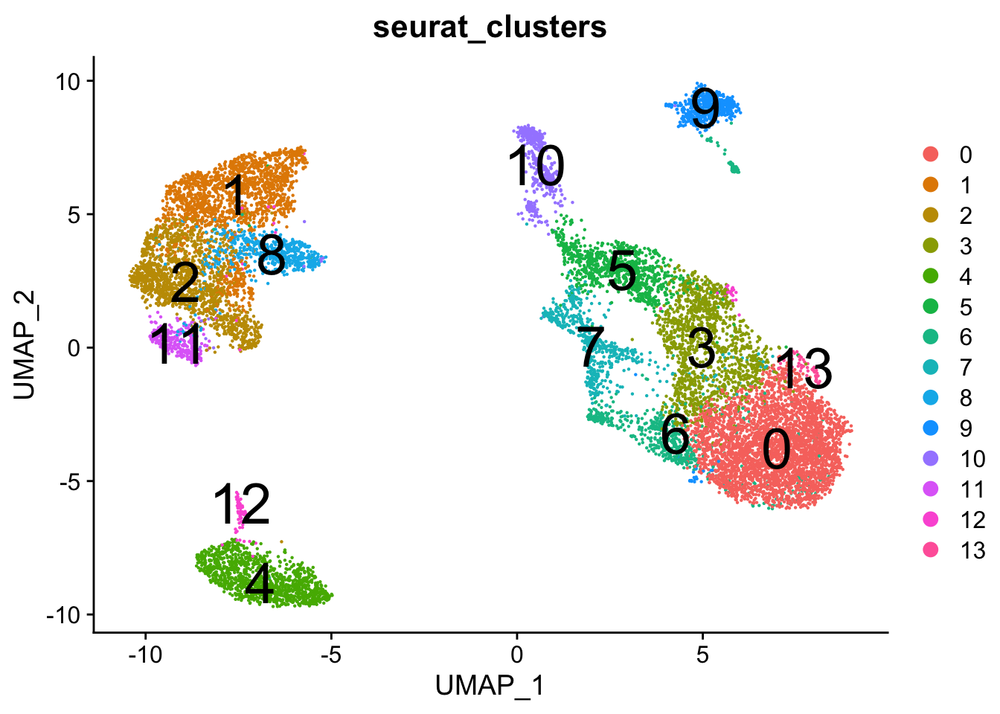
####################################
### Colour dimension reduction plots by dataset
####################################
plots <- DimPlot(seurat.object.integrated, group.by = c("dataset"), combine = F, reduction = DimRedMethodPlots)
plots <- lapply(X = plots, FUN = function(x) x + theme(legend.position = "top") + guides(color = guide_legend(ncol = 6, override.aes = list(size = 3))))
OutfilePdf<-paste0(PathForOutfiles, "/", PrefixOutfiles, "_", DimensionReductionMethods[[DimRedMethodPlots]][["name"]], "Plot_GlobalClustering_ColourByDataset", ".pdf")
pdf(file=OutfilePdf, width = 7, height = 8)
print(plots)## [[1]]## quartz_off_screen
## 2## [[1]]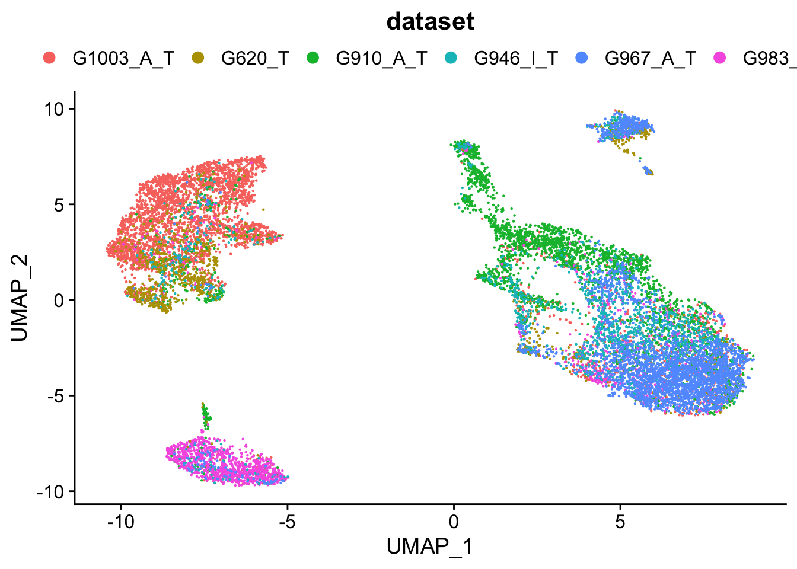
####################################
### Colour dimension reduction plots for all cells by selected genes
####################################
seurat.object.integrated@active.assay <- "SCT"
plots <- FeaturePlot(object = seurat.object.integrated, features = SelectedGenes, cols = c("lightgrey", "blue"),
reduction = DimRedMethodPlots, order = T, slot = "data", pt.size = 0.3, min.cutoff = "q0.1", max.cutoff = "q90",
ncol = 3)
OutfilePdf<-paste0(PathForOutfiles, "/", PrefixOutfiles, "_", DimensionReductionMethods[[DimRedMethodPlots]][["name"]], "Plot_AllCells_ColourBySelectedGenes", ".pdf")
pdf(file=OutfilePdf, width=8, height=8)
print(plots)
dev.off()## quartz_off_screen
## 2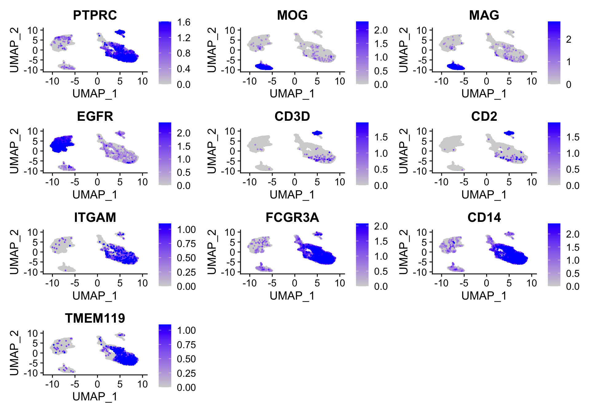
####################################
### Colour dimension reduction plots using cell-level metadata
####################################
### Load Metadata
CellPropertiesFromMetadata <- data.frame(read.table(InfileMetadata, header = T, row.names = 1, check.names = F))
head(CellPropertiesFromMetadata)## cell_cluster cell_cluster.cell_type cell_type found_in_cell_cluster
## G1003_A_T_AAACCTGAGTATCGAA 1 01.malignant malignant 1
## G1003_A_T_AAACCTGCAGTCCTTC 9 09.malignant malignant 1
## G1003_A_T_AAACCTGTCAGTTTGG 11 11.malignant malignant 1
## G1003_A_T_AAACCTGTCGGAATCT 2 02.malignant malignant 1
## G1003_A_T_AAACCTGTCGTTTAGG 2 02.malignant malignant 1
## G1003_A_T_AAACGGGAGAAACCGC 2 02.malignant malignant 1
## dataset_id monochrome
## G1003_A_T_AAACCTGAGTATCGAA G1003_A_T 1
## G1003_A_T_AAACCTGCAGTCCTTC G1003_A_T 1
## G1003_A_T_AAACCTGTCAGTTTGG G1003_A_T 1
## G1003_A_T_AAACCTGTCGGAATCT G1003_A_T 1
## G1003_A_T_AAACCTGTCGTTTAGG G1003_A_T 1
## G1003_A_T_AAACGGGAGAAACCGC G1003_A_T 1## orig.ident nCount_RNA nFeature_RNA dataset.label mito.fraction
## G1003_A_T_AAACCTGAGTATCGAA G1003 6271 2252 G1003_A_T 0.03364695
## G1003_A_T_AAACCTGCAGTCCTTC G1003 12496 3440 G1003_A_T 0.04793534
## G1003_A_T_AAACCTGTCAGTTTGG G1003 11705 3734 G1003_A_T 0.10081162
## G1003_A_T_AAACCTGTCGGAATCT G1003 7791 2931 G1003_A_T 0.12347581
## G1003_A_T_AAACCTGTCGTTTAGG G1003 8277 3083 G1003_A_T 0.09423704
## G1003_A_T_AAACGGGAGAAACCGC G1003 5297 2415 G1003_A_T 0.06890693
## dataset nCount_SCT nFeature_SCT integrated_snn_res.0.5
## G1003_A_T_AAACCTGAGTATCGAA G1003_A_T 7200 2252 2
## G1003_A_T_AAACCTGCAGTCCTTC G1003_A_T 8470 3270 8
## G1003_A_T_AAACCTGTCAGTTTGG G1003_A_T 8599 3666 11
## G1003_A_T_AAACCTGTCGGAATCT G1003_A_T 7779 2931 1
## G1003_A_T_AAACCTGTCGTTTAGG G1003_A_T 8026 3083 1
## G1003_A_T_AAACGGGAGAAACCGC G1003_A_T 6973 2417 1
## seurat_clusters
## G1003_A_T_AAACCTGAGTATCGAA 2
## G1003_A_T_AAACCTGCAGTCCTTC 8
## G1003_A_T_AAACCTGTCAGTTTGG 11
## G1003_A_T_AAACCTGTCGGAATCT 1
## G1003_A_T_AAACCTGTCGTTTAGG 1
## G1003_A_T_AAACGGGAGAAACCGC 1seurat.object.integrated <- AddMetaData(object = seurat.object.integrated, metadata = CellPropertiesFromMetadata)
for (property in MetedataPropsToPlot) {
plots <- DimPlot(seurat.object.integrated, group.by = property, combine = F, reduction = DimRedMethodPlots, label = T)
plots <- lapply(X = plots, FUN = function(x) x + theme(legend.position = "top", legend.text.align = 0) + labs(title = property) +
guides(color = guide_legend(ncol = 5, override.aes = list(size = 3))))
OutfilePdf <- paste0(PathForOutfiles, "/", PrefixOutfiles, "_", DimensionReductionMethods[[DimRedMethodPlots]][["name"]], "Plot_Metadata_", property, ".pdf")
pdf(file=OutfilePdf, width = 7, height = 7)
print(plots)
dev.off()
print(plots)
}## [[1]]##
## [[1]]##
## [[1]]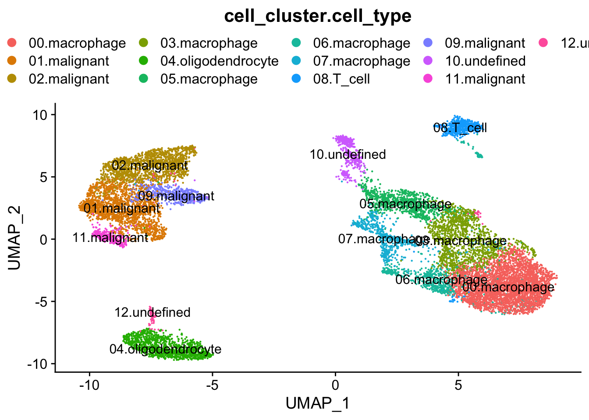
##
## [[1]]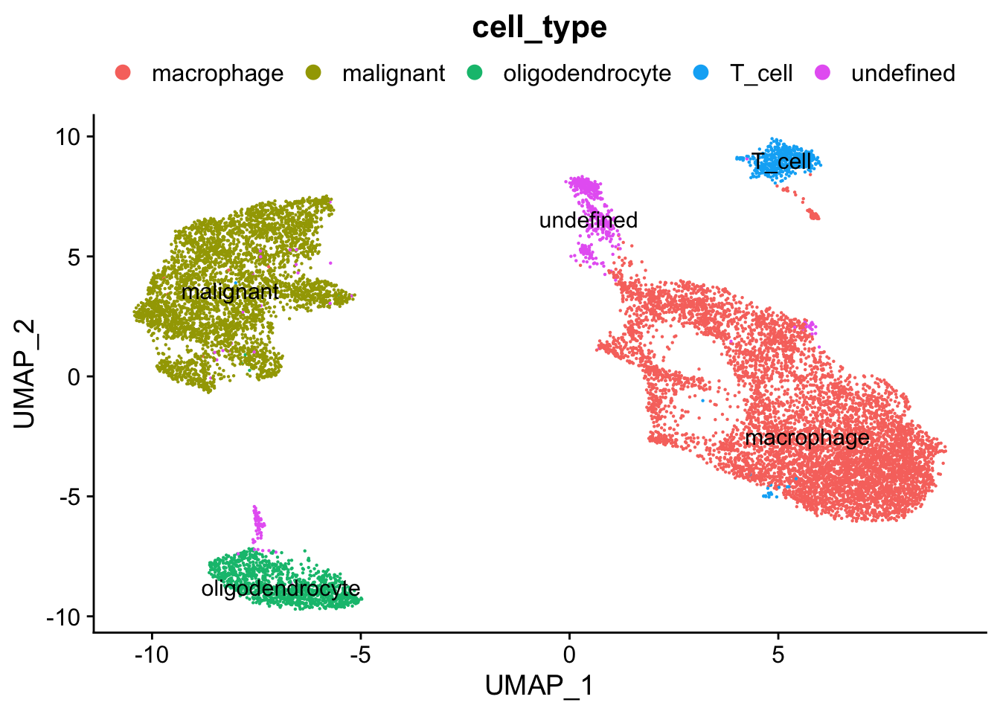
####################################
### Colour dimension reduction plots by global cell-clusters, subsetting each dataset
####################################
for (datasetID in unique(seurat.object.integrated@meta.data$dataset)) {
Idents(seurat.object.integrated) <- "dataset"
seurat.object.integrated.subset <- subset(x = seurat.object.integrated, idents = datasetID)
plots <- DimPlot(seurat.object.integrated.subset, group.by = "seurat_clusters", combine = F, reduction = DimRedMethodPlots, label = T)
plots <- lapply(X = plots, FUN = function(x) x + theme(legend.position = "top", legend.text.align = 0)
+ labs(title = paste0("seurat_clusters - ", datasetID))
+ guides(color = guide_legend(ncol = 7, override.aes = list(size = 3))))
OutfilePdf<-paste0(PathForOutfiles, "/", PrefixOutfiles, "_", DimensionReductionMethods[[DimRedMethodPlots]][["name"]], "Plot_", datasetID, "_GlobalClustering_ColourByCellClusters.pdf")
pdf(file=OutfilePdf, width = 7, height = 7)
print(plots)
dev.off()
print(plots)
}## [[1]]##
## [[1]]##
## [[1]]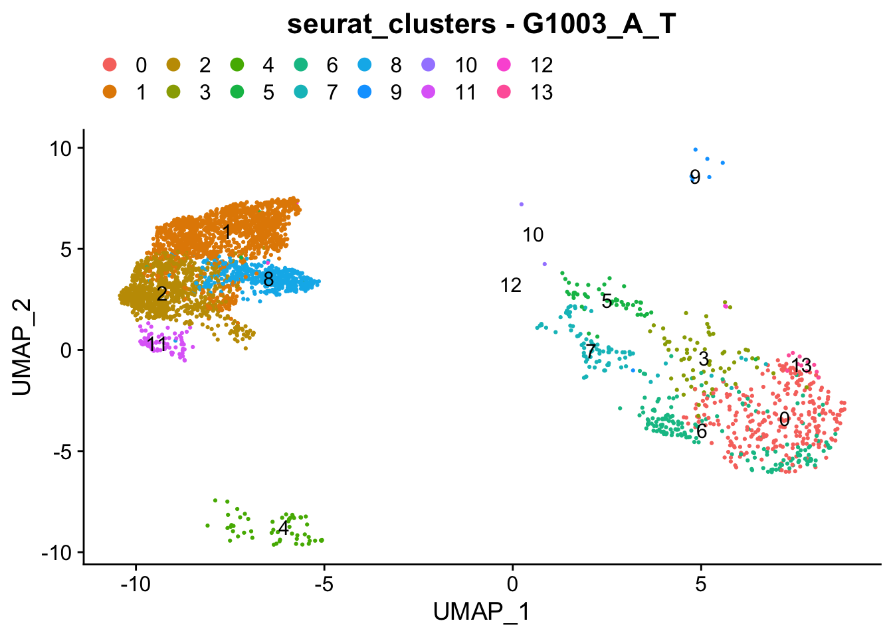
##
## [[1]]##
## [[1]]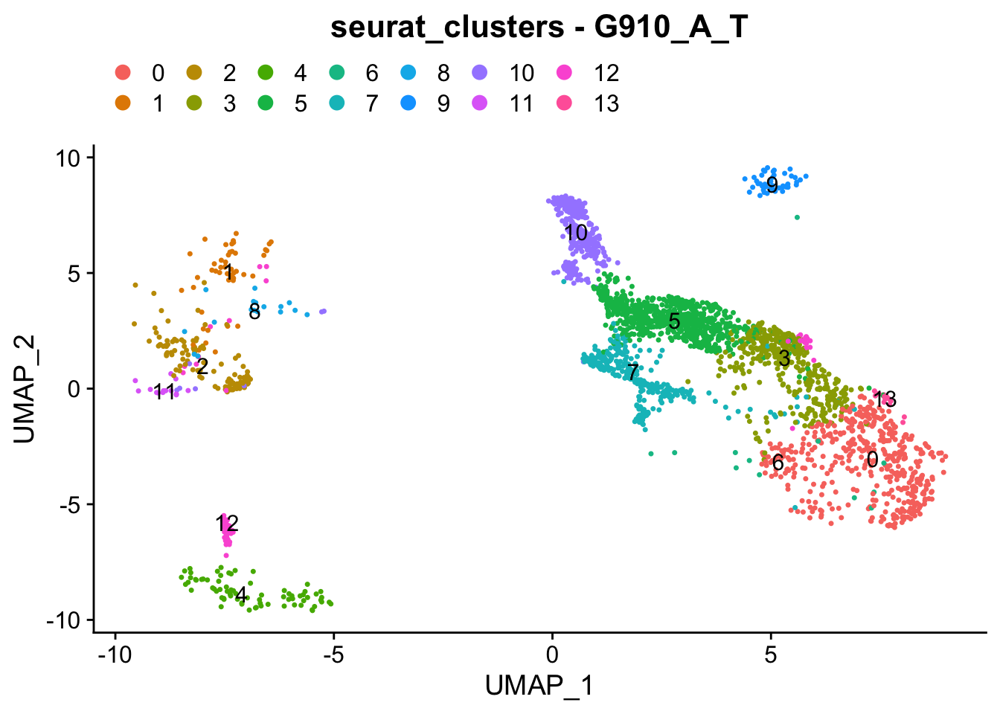
##
## [[1]]##
## [[1]]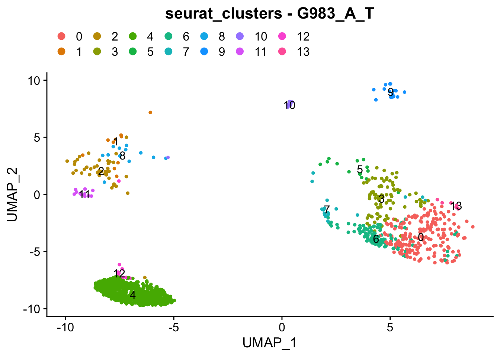
##
## [[1]]##
## [[1]]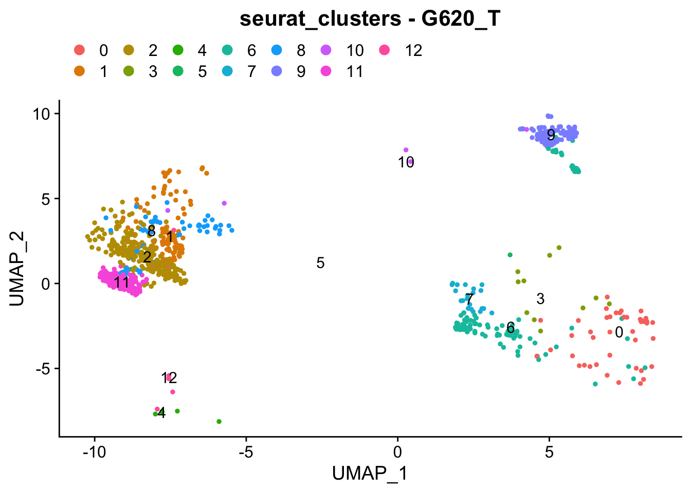
##
## [[1]]##
## [[1]]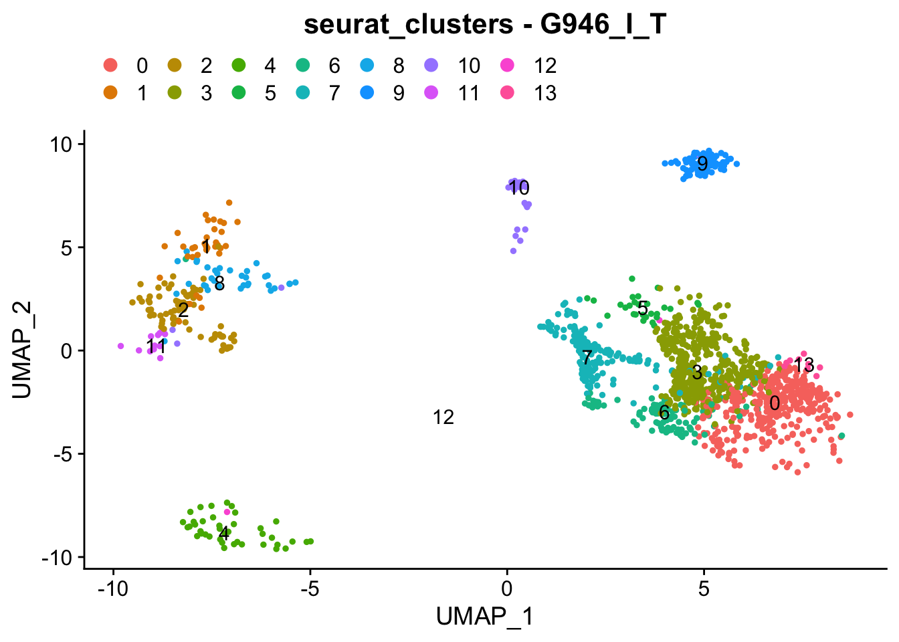
##
## [[1]]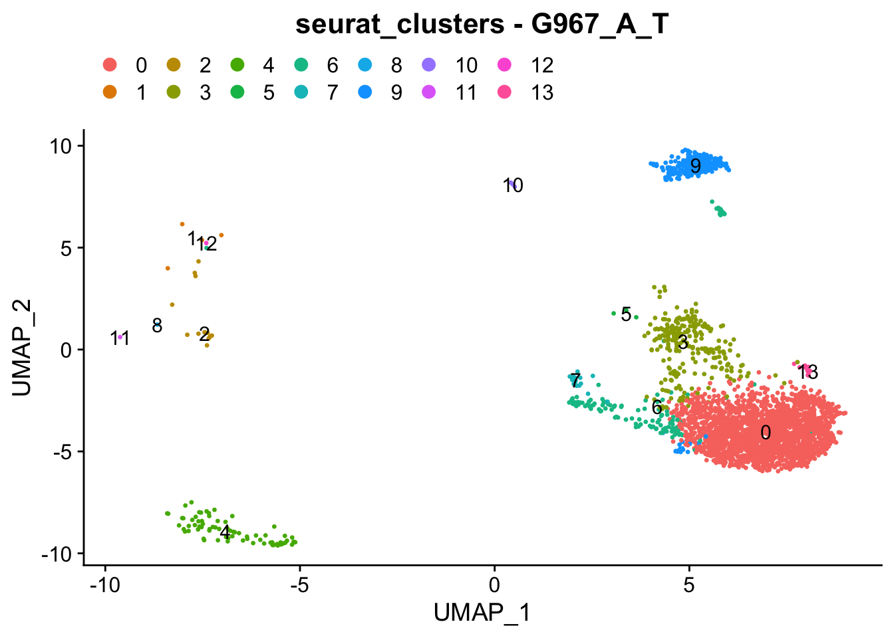
1.0.20 GENERATE DOT PLOTS
####################################
### Dot plots: genes (x-axis) cell-properties (y-axis), all cells
####################################
Idents(seurat.object.integrated) <- "seurat_clusters"
plots <- DotPlot(seurat.object.integrated, features = SelectedGenes, assay = ASSAY, cluster.idents = T)
plots <- plots + RotatedAxis()
OutfilePdf<-paste0(PathForOutfiles, "/", PrefixOutfiles, "_", "DotPlots_AllCells_SelectedGenes.pdf")
pdf(file=OutfilePdf, width = 7, height = 7)
print(plots)
dev.off()## quartz_off_screen
## 2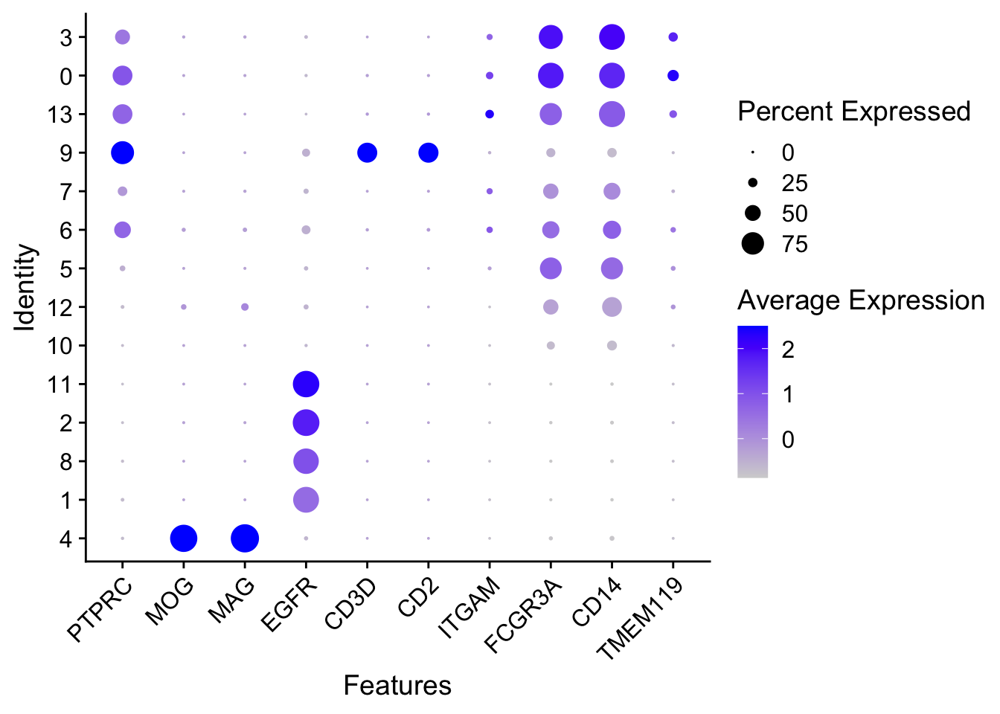
####################################
### Dot plots: genes (x-axis) cell-properties (y-axis), each dataset cells
####################################
Idents(seurat.object.integrated) <- "seurat_clusters"
plots <- DotPlot(seurat.object.integrated, features = SelectedGenes, idents = ClustersForDotPlot2,
cols = c("cornflowerblue", "darkolivegreen4", "chocolate1", "aquamarine3", "burlywood3",
"azure4", "brown1"), dot.scale = 4, split.by = "dataset")
plots <- plots + RotatedAxis()
OutfilePdf<-paste0(PathForOutfiles, "/", PrefixOutfiles, "_", "DotPlots_EachDatasetCells", ".pdf")
pdf(file=OutfilePdf, width = 7, height = 9)
print(plots)
dev.off()## quartz_off_screen
## 2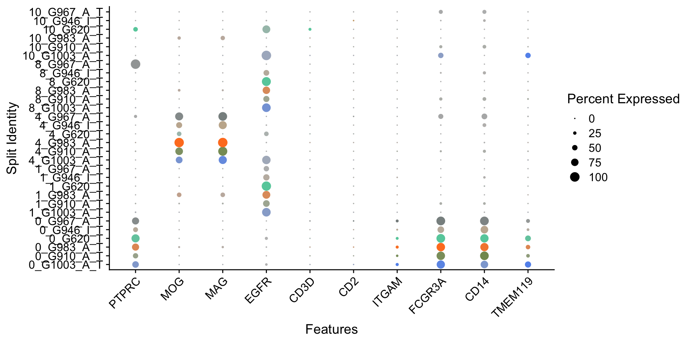
1.0.21 GET AVERAGE GENE EXPRESSION PER CLUSTER
####################################
### Get average gene expression for each global cluster
####################################
Idents(object = seurat.object.integrated) <- "seurat_clusters"
cluster.averages <- AverageExpression(object = seurat.object.integrated, use.scale = F, use.counts = F, assays = ASSAY)## The following functions and any applicable methods accept the dots: CreateSeuratObjectOutfile.con <- bzfile(paste0(PathForOutfiles, "/", PrefixOutfiles, "_AverageGeneExpression_GlobalClustering.tsv.bz2"), "w")
Headers<-paste("AVERAGE_GENE_EXPRESSION", paste("c", colnames(cluster.averages[[ASSAY]]), sep="", collapse="\t"), sep="\t", collapse = "\t")
write.table(Headers, file = Outfile.con, row.names = F, col.names = F, sep="\t", quote = F)
write.table(data.frame(cluster.averages[[ASSAY]]), file = Outfile.con, row.names = T, col.names = F, sep="\t", quote = F, append = T)
close(Outfile.con)1.0.22 SAVE INTEGRATED R_OBJECT
1.0.23 OBTAIN COMPUTING TIME
####################################
### Obtain computing time used
####################################
StopWatchEnd$Overall <- Sys.time()
OutfileCPUtimes<-paste0(PathForOutfiles, "/", PrefixOutfiles, "_PCA_Clustering_DimReduction_CPUtimes.txt")
write(file = OutfileCPUtimes, x = paste("#Number_of_cores_used", NumbCoresToUse, sep = "\t", collapse = ""))
write(file = OutfileCPUtimes, x = paste("#MaxGlobalVariables", MaxGlobalVariables, sep = "\t", collapse = ""), append = T)
Headers<-paste("Step", "Time(minutes)", sep="\t")
write.table(Headers, file = OutfileCPUtimes, row.names = F, col.names = F, sep="\t", quote = F, append = T)
lapply(names(StopWatchStart), function(stepToClock) {
if (regexpr("POSIXct", class(StopWatchStart[[stepToClock]]), ignore.case = T)[1] == 1) {
TimeStart <- StopWatchStart[[stepToClock]]
TimeEnd <- StopWatchEnd[[stepToClock]]
TimeDiff <- format(difftime(TimeEnd, TimeStart, units = "min"))
ReportTime<-c(paste(stepToClock, TimeDiff, sep = "\t", collapse = ""))
write(file = OutfileCPUtimes, x=gsub(pattern = " mins", replacement = "", x = ReportTime), append = T)
}
})## [[1]]
## NULL1.0.24 FINISH
####################################
### Finish
####################################
options(warn = oldw)
writeLines(paste0("\nEND - Check:\n", PathForOutfiles, "\nFor outfiles\n\n"))##
## END - Check:
## /Users/jdiazmej/CourseData/CAN_data/Module7/OUTFILES/Richards_NatCancer_2021/STACAS/WITHOUT_G945_I_T
## For outfiles- Javier Diaz - javier.diazmejia@gmail.com
Script based on: https://satijalab.org/seurat/articles/integration_introduction.html
- GENERAL OVERVIEW OF THIS SCRIPT
- Loads integrated datasets R object produced by script CBW_CAN_2021_Module7_Lab3_PCA_Clustering_DimReduction.R
- Computes differential gene expression (DGE) for each cell-class vs. the rest of cells
- Computes DGE for one cell-class vs. another cell-class
1.0.25 DEFINE ENVIRONMENT, INPUTS AND OUTDIR
1.0.25.0.0.1 Required libraries
1.0.25.0.0.2 User’s home and stopwatch to time run
## [1] "/Users/jdiazmej"1.0.25.0.0.3 Define inputs
### Run specific inputs and parameters
AnchorFinder <- "STACAS"
PathToIntegratedRds <- paste0("~/CourseData/CAN_data/Module7/OUTFILES/Richards_NatCancer_2021/", AnchorFinder, "/WITHOUT_G945_I_T", "/Richards_NatCancer_2021_PCA_Clustering_DimReduction.rds") ### /path_to/*rds (R object) from CBW_CAN_2021_Module7_Lab3_PCA_Clustering_DimReduction.R
InfileMetadata <- "~/CourseData/CAN_data/Module7/METADATA/Richards_NatCancer_2021_without_G945_I_T.metadata.tsv"
PathToIntegratedRds <- gsub("^~/",paste0(UserHomeDirectory,"/"), PathToIntegratedRds)
ASSAY <- "SCT" ### Note, there is debate in the field about whether DGE should be calculated using RNA or SCT1.0.25.0.0.4 Define outputs
### Outputs
PathForOutfiles <- paste0("~/CourseData/CAN_data/Module7/OUTFILES/Richards_NatCancer_2021/", AnchorFinder, "/WITHOUT_G945_I_T") ## /path_to/out_directory
PrefixOutfiles <- "Richards_NatCancer_2021" ## Prefix for outfiles
PathForOutfiles <- gsub("^~/",paste0(UserHomeDirectory,"/"), PathForOutfiles)
dir.create(path = PathForOutfiles, recursive = T, showWarnings = F)1.0.25.0.0.5 Define default parameters
### Default parameters. Either suggested by Seurat developers, or tailored empirically.
DefaultParameters <- list(
### Parameters for DGE calculation OneVsRest
Test_OneVsRest = "wilcox",
OnlyPos_OneVsRest = F,
ReturnMinPctThresh_OneVsRest = 0, # Use 0 if all cells should be included
ReturnPvalThresh_OneVsRest = 1, # Use 1 if NO p-value cutoff should be used
ReturnLogFcThresh_OneVsRest = 0, # Use 0 if NO LogFc cutoff should be used
### Parameters for DGE calculation Paired
Test_Paired = "wilcox",
OnlyPos_Paired = F,
ReturnMinPctThresh_Paired = 0, # Use 0 if all cells should be included
ReturnPvalThresh_Paired = 1, # Use 1 if NO p-value cutoff should be used
ReturnLogFcThresh_Paired = 0, # Use 0 if NO LogFc cutoff should be used
subclass1_Paired = "malignant",
subclass2_Paired = "oligodendrocyte"
)1.0.25.0.0.6 Report R sessionInfo
OutfileRSessionInfo<-paste0(PathForOutfiles, "/", PrefixOutfiles, "_SingleCell_4_DGE_RSessionInfo.txt")
writeLines(capture.output(sessionInfo()), OutfileRSessionInfo)
capture.output(sessionInfo())## [1] "R version 4.0.2 (2020-06-22)"
## [2] "Platform: x86_64-apple-darwin17.0 (64-bit)"
## [3] "Running under: macOS High Sierra 10.13.6"
## [4] ""
## [5] "Matrix products: default"
## [6] "BLAS: /System/Library/Frameworks/Accelerate.framework/Versions/A/Frameworks/vecLib.framework/Versions/A/libBLAS.dylib"
## [7] "LAPACK: /Library/Frameworks/R.framework/Versions/4.0/Resources/lib/libRlapack.dylib"
## [8] ""
## [9] "locale:"
## [10] "[1] en_CA.UTF-8/en_CA.UTF-8/en_CA.UTF-8/C/en_CA.UTF-8/en_CA.UTF-8"
## [11] ""
## [12] "attached base packages:"
## [13] "[1] parallel stats4 stats graphics grDevices utils datasets methods base "
## [14] ""
## [15] "other attached packages:"
## [16] " [1] DropletUtils_1.8.0 SingleCellExperiment_1.10.1 SummarizedExperiment_1.18.2"
## [17] " [4] DelayedArray_0.14.1 matrixStats_0.59.0 Biobase_2.48.0 "
## [18] " [7] GenomicRanges_1.40.0 GenomeInfoDb_1.24.2 IRanges_2.22.2 "
## [19] "[10] S4Vectors_0.26.1 BiocGenerics_0.34.0 ggplot2_3.3.3 "
## [20] "[13] STACAS_1.1.0 future_1.21.0 SeuratObject_4.0.1 "
## [21] "[16] Seurat_4.0.2 "
## [22] ""
## [23] "loaded via a namespace (and not attached):"
## [24] " [1] plyr_1.8.6 igraph_1.2.6 lazyeval_0.2.2 splines_4.0.2 "
## [25] " [5] BiocParallel_1.22.0 listenv_0.8.0 scattermore_0.7 digest_0.6.27 "
## [26] " [9] htmltools_0.5.1.1 fansi_0.5.0 magrittr_2.0.1 tensor_1.5 "
## [27] " [13] cluster_2.1.2 ROCR_1.0-11 limma_3.44.3 globals_0.14.0 "
## [28] " [17] R.utils_2.10.1 spatstat.sparse_2.0-0 colorspace_2.0-1 ggrepel_0.9.1 "
## [29] " [21] xfun_0.23 dplyr_1.0.6 crayon_1.4.1 RCurl_1.98-1.3 "
## [30] " [25] jsonlite_1.7.2 spatstat.data_2.1-0 survival_3.2-11 zoo_1.8-9 "
## [31] " [29] glue_1.4.2 polyclip_1.10-0 gtable_0.3.0 zlibbioc_1.34.0 "
## [32] " [33] XVector_0.28.0 leiden_0.3.8 Rhdf5lib_1.10.1 future.apply_1.7.0 "
## [33] " [37] HDF5Array_1.16.1 abind_1.4-5 scales_1.1.1 edgeR_3.30.3 "
## [34] " [41] DBI_1.1.1 miniUI_0.1.1.1 Rcpp_1.0.6 viridisLite_0.4.0 "
## [35] " [45] xtable_1.8-4 dqrng_0.3.0 reticulate_1.20 spatstat.core_2.1-2 "
## [36] " [49] htmlwidgets_1.5.3 httr_1.4.2 RColorBrewer_1.1-2 ellipsis_0.3.2 "
## [37] " [53] ica_1.0-2 R.methodsS3_1.8.1 pkgconfig_2.0.3 farver_2.1.0 "
## [38] " [57] sass_0.4.0 uwot_0.1.10 deldir_0.2-10 locfit_1.5-9.4 "
## [39] " [61] utf8_1.2.1 tidyselect_1.1.1 labeling_0.4.2 rlang_0.4.11 "
## [40] " [65] reshape2_1.4.4 later_1.2.0 munsell_0.5.0 tools_4.0.2 "
## [41] " [69] generics_0.1.0 ggridges_0.5.3 evaluate_0.14 stringr_1.4.0 "
## [42] " [73] fastmap_1.1.0 yaml_2.2.1 goftest_1.2-2 knitr_1.33 "
## [43] " [77] fitdistrplus_1.1-5 purrr_0.3.4 RANN_2.6.1 packrat_0.6.0 "
## [44] " [81] pbapply_1.4-3 nlme_3.1-152 mime_0.10 R.oo_1.24.0 "
## [45] " [85] compiler_4.0.2 rstudioapi_0.13 plotly_4.9.3 png_0.1-7 "
## [46] " [89] spatstat.utils_2.1-0 tibble_3.1.2 bslib_0.2.5.1 stringi_1.6.2 "
## [47] " [93] highr_0.9 RSpectra_0.16-0 lattice_0.20-44 Matrix_1.3-3 "
## [48] " [97] vctrs_0.3.8 pillar_1.6.1 lifecycle_1.0.0 spatstat.geom_2.1-0 "
## [49] "[101] lmtest_0.9-38 jquerylib_0.1.4 RcppAnnoy_0.0.18 data.table_1.14.0 "
## [50] "[105] cowplot_1.1.1 bitops_1.0-7 irlba_2.3.3 httpuv_1.6.1 "
## [51] "[109] patchwork_1.1.1 R6_2.5.0 bookdown_0.22 promises_1.2.0.1 "
## [52] "[113] KernSmooth_2.23-20 gridExtra_2.3 parallelly_1.25.0 codetools_0.2-18 "
## [53] "[117] MASS_7.3-54 assertthat_0.2.1 rhdf5_2.32.4 withr_2.4.2 "
## [54] "[121] sctransform_0.3.2 GenomeInfoDbData_1.2.3 mgcv_1.8-35 grid_4.0.2 "
## [55] "[125] rpart_4.1-15 tidyr_1.1.3 rmarkdown_2.8 Rtsne_0.15 "
## [56] "[129] shiny_1.6.0 "1.0.25.0.0.7 Define number of cores and RAM for parallelization
NumbCores <- "MAX"
MaxGlobalVariables <- 30000
if (regexpr("^MAX$", NumbCores, ignore.case = T)[1] == 1) {
NumbCoresToUse <- availableCores()[[1]]
}else if (regexpr("^[0-9]+$", NumbCores, ignore.case = T)[1] == 1) {
NumbCoresToUse <- as.numeric(NumbCores)
}else{
stop(paste0("Unexpected format for NumbCores: ", NumbCores, "\n"))
}
if (NumbCoresToUse == 1) {
plan(strategy = "sequential")
writeLines(paste0("\n", "*** Running: in 'sequential' mode with ", NumbCoresToUse, " core ***", "\n"))
}else if (NumbCoresToUse > 1) {
plan(strategy = "multicore", workers = NumbCoresToUse)
writeLines(paste0("\n", "*** Running: in 'multicore' mode with ", NumbCoresToUse, " cores ***", "\n"))
}else{
stop(paste0("Unexpected NumbCores = ", NumbCoresToUse))
}##
## *** Running: in 'multicore' mode with 4 cores ***1.0.26 LOAD R OBJECT
1.0.27 LOAD METADATA
####################################
### Loading metadata from --infile_metadata
####################################
CellPropertiesFromMetadata <- data.frame(read.table(InfileMetadata, header = T, row.names = 1, check.names = F))
head(CellPropertiesFromMetadata)## cell_cluster cell_cluster.cell_type cell_type found_in_cell_cluster
## G1003_A_T_AAACCTGAGTATCGAA 1 01.malignant malignant 1
## G1003_A_T_AAACCTGCAGTCCTTC 9 09.malignant malignant 1
## G1003_A_T_AAACCTGTCAGTTTGG 11 11.malignant malignant 1
## G1003_A_T_AAACCTGTCGGAATCT 2 02.malignant malignant 1
## G1003_A_T_AAACCTGTCGTTTAGG 2 02.malignant malignant 1
## G1003_A_T_AAACGGGAGAAACCGC 2 02.malignant malignant 1
## dataset_id monochrome
## G1003_A_T_AAACCTGAGTATCGAA G1003_A_T 1
## G1003_A_T_AAACCTGCAGTCCTTC G1003_A_T 1
## G1003_A_T_AAACCTGTCAGTTTGG G1003_A_T 1
## G1003_A_T_AAACCTGTCGGAATCT G1003_A_T 1
## G1003_A_T_AAACCTGTCGTTTAGG G1003_A_T 1
## G1003_A_T_AAACGGGAGAAACCGC G1003_A_T 11.0.28 FIND DGE USING GLOBAL CELL CLUSTERS DIMENSIONS
Idents(object = seurat.object.integrated) <- "seurat_clusters"
### For details on this approach to use a pseudocount, see https://f1000research.com/articles/7-1522
FindMarkers.Pseudocount <- 1/length(rownames(seurat.object.integrated@meta.data))
### base = exp(1) is needed in Seurat v4 because the default uses Log2FC instead of LogNatFC, like v3 does
seurat.object.integrated.markers <- FindAllMarkers(object = seurat.object.integrated,
assay = ASSAY,
test.use = DefaultParameters$Test_OneVsRest,
only.pos = DefaultParameters$OnlyPos_OneVsRest,
min.pct = DefaultParameters$ReturnMinPctThresh_OneVsRest,
return.thresh = DefaultParameters$ReturnPvalThresh_OneVsRest,
logfc.threshold = DefaultParameters$ReturnLogFcThresh_OneVsRest,
pseudocount.use = FindMarkers.Pseudocount,
base = exp(1))## Calculating cluster 0## Calculating cluster 1## Calculating cluster 2## Calculating cluster 3## Calculating cluster 4## Calculating cluster 5## Calculating cluster 6## Calculating cluster 7## Calculating cluster 8## Calculating cluster 9## Calculating cluster 10## Calculating cluster 11## Calculating cluster 12## Calculating cluster 13## p_val avg_logFC pct.1 pct.2 p_val_adj cluster gene
## IL1A 0 3.255033 0.213 0.013 0 0 IL1A
## CCL4 0 3.249802 0.955 0.308 0 0 CCL4
## CCL3L3 0 3.231801 0.922 0.180 0 0 CCL3L3
## INHBA 0 3.090476 0.275 0.024 0 0 INHBA
## CCL4L2 0 3.040385 0.851 0.179 0 0 CCL4L2
## CCL3 0 2.974216 0.987 0.407 0 0 CCL3SimplifiedDiffExprGenes.df <- seurat.object.integrated.markers[,c("cluster","gene","p_val","p_val_adj","avg_logFC","pct.1","pct.2")]
### Add -Log10(Pval) * sign of FC
SimplifiedDiffExprGenes.df[["mLog10Pval_FCsign"]] <- (log10(SimplifiedDiffExprGenes.df[["p_val"]])*-1) * sign(SimplifiedDiffExprGenes.df[,"avg_logFC"])
### Replace -Inf and Inf in mLog10Pval_FCsign
SimplifiedDiffExprGenes.df[,"mLog10Pval_FCsign"][SimplifiedDiffExprGenes.df[,"mLog10Pval_FCsign"] == Inf] <- log10(min(SimplifiedDiffExprGenes.df[,"p_val"][SimplifiedDiffExprGenes.df[,"p_val"] > 0]))*-1
SimplifiedDiffExprGenes.df[,"mLog10Pval_FCsign"][SimplifiedDiffExprGenes.df[,"mLog10Pval_FCsign"] == -Inf] <- log10(max(SimplifiedDiffExprGenes.df[,"p_val"][SimplifiedDiffExprGenes.df[,"p_val"] > 0]))*-1
head(SimplifiedDiffExprGenes.df)## cluster gene p_val p_val_adj avg_logFC pct.1 pct.2 mLog10Pval_FCsign
## IL1A 0 IL1A 0 0 3.255033 0.213 0.013 307.2867
## CCL4 0 CCL4 0 0 3.249802 0.955 0.308 307.2867
## CCL3L3 0 CCL3L3 0 0 3.231801 0.922 0.180 307.2867
## INHBA 0 INHBA 0 0 3.090476 0.275 0.024 307.2867
## CCL4L2 0 CCL4L2 0 0 3.040385 0.851 0.179 307.2867
## CCL3 0 CCL3 0 0 2.974216 0.987 0.407 307.2867OutfileDGE <- paste0(PathForOutfiles, "/", PrefixOutfiles, "_DGE_GlobalClustering_", ASSAY, "_", DefaultParameters$Test_OneVsRest, ".tsv.bz2")
Outfile.con <- bzfile(OutfileDGE, "w")
write.table(x = data.frame(SimplifiedDiffExprGenes.df), file = Outfile.con, row.names = F, sep="\t", quote = F)
close(Outfile.con)1.0.29 FIND DGE USING PAIRED METADATA CLASSES
Idents(seurat.object.integrated) <- "cell_type"
FindMarkers.Pseudocount <- 1/length(rownames(seurat.object.integrated@meta.data))
### base = exp(1) is needed in Seurat v4 because the default uses Log2FC instead of LogNatFC, like v3 does
seurat.object.integrated.markers <- data.frame(FindMarkers(object = seurat.object.integrated,
assay = ASSAY,
test.use = DefaultParameters$Test_Paired,
only.pos = DefaultParameters$OnlyPos_Paired,
ident.1 = DefaultParameters$subclass1_Paired,
ident.2 = DefaultParameters$subclass2_Paired,
min.pct = DefaultParameters$ReturnMinPctThresh_Paired,
return.thresh = DefaultParameters$ReturnPvalThresh_Paired,
logfc.threshold = DefaultParameters$ReturnLogFcThresh_Paired,
pseudocount.use = FindMarkers.Pseudocount,
base = exp(1)))
seurat.object.integrated.markers$class1 <- DefaultParameters$subclass1_Paired
seurat.object.integrated.markers$class2 <- DefaultParameters$subclass2_Paired
seurat.object.integrated.markers$gene <- rownames(seurat.object.integrated.markers)
SimplifiedDiffExprGenes.df <- seurat.object.integrated.markers[,c("class1","class2","gene","p_val","p_val_adj","avg_logFC","pct.1","pct.2")]
### Add -Log10(Pval) * sign of FC
SimplifiedDiffExprGenes.df[["mLog10Pval_FCsign"]] <- (log10(SimplifiedDiffExprGenes.df[["p_val"]])*-1) * sign(SimplifiedDiffExprGenes.df[,"avg_logFC"])
### Replace -Inf and Inf in mLog10Pval_FCsign
SimplifiedDiffExprGenes.df[,"mLog10Pval_FCsign"][SimplifiedDiffExprGenes.df[,"mLog10Pval_FCsign"] == Inf] <- log10(min(SimplifiedDiffExprGenes.df[,"p_val"][SimplifiedDiffExprGenes.df[,"p_val"] > 0]))*-1
SimplifiedDiffExprGenes.df[,"mLog10Pval_FCsign"][SimplifiedDiffExprGenes.df[,"mLog10Pval_FCsign"] == -Inf] <- log10(max(SimplifiedDiffExprGenes.df[,"p_val"][SimplifiedDiffExprGenes.df[,"p_val"] > 0]))*-1
head(SimplifiedDiffExprGenes.df)## class1 class2 gene p_val p_val_adj avg_logFC pct.1 pct.2 mLog10Pval_FCsign
## VWA1 malignant oligodendrocyte VWA1 0 0 -1.9362850 0.202 0.757 0.0000
## RBP7 malignant oligodendrocyte RBP7 0 0 -5.0060315 0.005 0.510 0.0000
## CAMK2N1 malignant oligodendrocyte CAMK2N1 0 0 -2.4241825 0.289 0.930 0.0000
## RPL11 malignant oligodendrocyte RPL11 0 0 0.9726906 0.998 0.986 307.2163
## YBX1 malignant oligodendrocyte YBX1 0 0 1.5010289 0.991 0.873 307.2163
## TMEM125 malignant oligodendrocyte TMEM125 0 0 -5.6157419 0.005 0.637 0.00001.0.30 OBTAIN COMPUTING TIME
####################################
### Obtain computing time used
####################################
StopWatchEnd$Overall <- Sys.time()
OutfileCPUtimes<-paste0(PathForOutfiles, "/", PrefixOutfiles, "_DGE_CPUtimes.txt")
write(file = OutfileCPUtimes, x = paste("#Number_of_cores_used", NumbCoresToUse, sep = "\t", collapse = ""))
write(file = OutfileCPUtimes, x = paste("#MaxGlobalVariables", MaxGlobalVariables, sep = "\t", collapse = ""), append = T)
Headers<-paste("Step", "Time(minutes)", sep="\t")
write.table(Headers, file = OutfileCPUtimes, row.names = F, col.names = F, sep="\t", quote = F, append = T)
lapply(names(StopWatchStart), function(stepToClock) {
if (regexpr("POSIXct", class(StopWatchStart[[stepToClock]]), ignore.case = T)[1] == 1) {
TimeStart <- StopWatchStart[[stepToClock]]
TimeEnd <- StopWatchEnd[[stepToClock]]
TimeDiff <- format(difftime(TimeEnd, TimeStart, units = "min"))
ReportTime<-c(paste(stepToClock, TimeDiff, sep = "\t", collapse = ""))
write(file = OutfileCPUtimes, x=gsub(pattern = " mins", replacement = "", x = ReportTime), append = T)
}
})## [[1]]
## NULL1.0.31 FINISH
####################################
### Finish
####################################
options(warn = oldw)
writeLines(paste0("\nEND - Check:\n", PathForOutfiles, "\nFor outfiles\n\n"))##
## END - Check:
## /Users/jdiazmej/CourseData/CAN_data/Module7/OUTFILES/Richards_NatCancer_2021/STACAS/WITHOUT_G945_I_T
## For outfiles